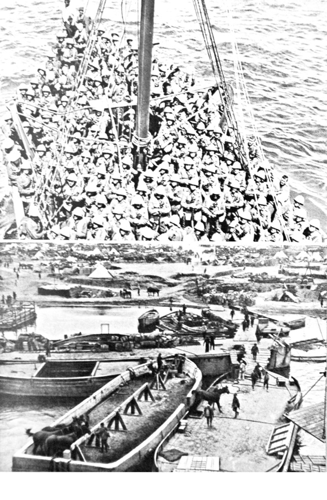
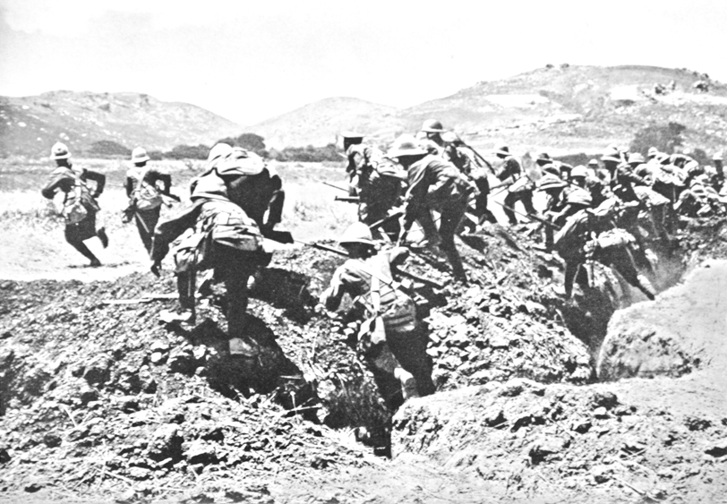
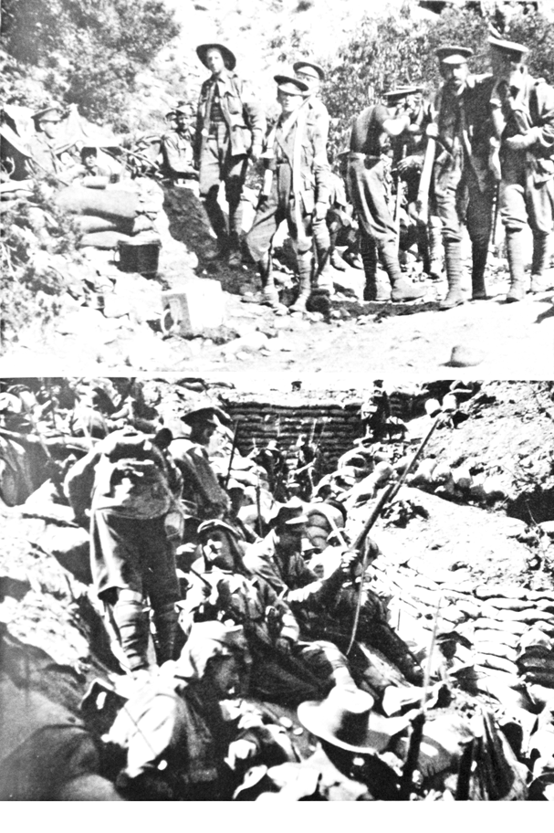
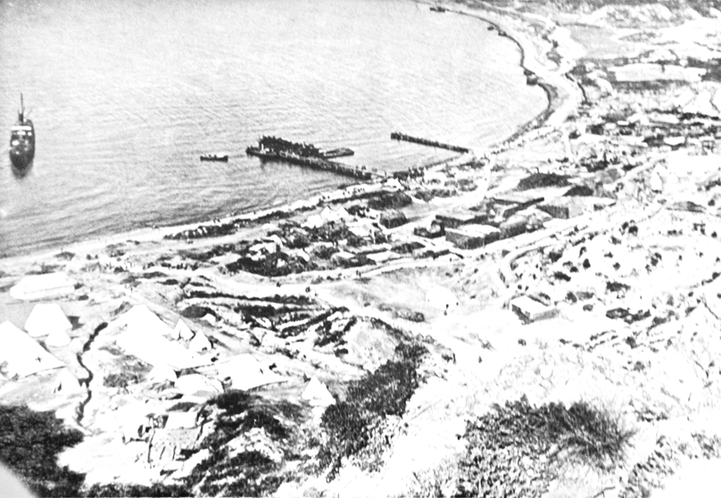

GÜNEY UCUNDA
Amiral Guepratte gemilerini ve kara çıkarma birliklerini, en azından oraya yerleştirmek için Gelibolu’nun güney ucuna sevk etti, çünkü bu günlerde yarımadada çok mühim hadiseler olmuştu.
İngiltere’nin güçlü donanmasının ateşli bir birliği 25 Nisan seher vaktinde sahili kuşattığında biz savaş bölgesini terk etmiştik.
Seddülbahir Tabyası taş, çakıl ve kumdan oluşan şekilsiz bir enkaz hâline gelmişti. Hareketsiz ama metanetli bir şekilde sahil muhafazanın işgal birlikleri bu cehennem ateşine tahammül ediyordu. Böylesi yaklaşan boğuk sesli bazı devasa mermiler, sığınakları tarumar edip, bütün grupları kendisiyle birlikte havaya ve ölüme götürdü.
Hayatta kalanlar sebat göstermekteydi. Etrafta savrulan tozlar, helezonik kum yığınları ve kayalıklar, cayırdayarak vızıldayan çelik parçaları. Yoğun bir duman bütün görüş alanını kaplamış, gemiler de duman ve kükürt dumanına bürünmüştü.
Yeni bir meltem geldi ve bu sisli havayı dağıttı. Nakliye vapurları tekrar birkaç dakikalığına göründü. Bu nakliye vapurlarından, birliklerle tıka basa dolu mavnalar ve botlar ayrıldı, uzun römorkör kafileleri oluşturarak ayrılıp Seddülbahir ve Helles Burnu arasında sahile ulaşma gayreti içine girdiler.
En dış uçta Sir Hamilton öncelikle buradan saldırmak istedi!
Botlar gitgide daha da yaklaşmaktaydı. 88. Tugay’ın mensupları galibiyet inancıyla neşeli bir şekilde sığ sulara atladı ve düşe kalka karaya yöneldi. Onlara karşı hiçbir top atışı olmadı, hiçbir tüfek mermisi havada ıslık çalmadı. Sadece arka arazide onların hat gemilerinin top mermileri patlamaktaydı.
Ölüm sessizliği içindeki kıyı önlerinde durmaktaydı. Sadece bir Türk’ün bile bu ateş ve çelik cehenneminde sağ kalmış olması imkânsızdı. O hâlde ileri! Yakında Gelibolu ve sonra da Konstantinopol bizimdir!
Ancak birdenbire en ön sıradakiler sanki biçilmiş gibi büyük bir gürültüyle sapır sapır suya döküldü. Tökezleme telleri görevini yapmıştı. Fırtına gibi ileri atılan arkadaşları da hemen düşüyor ve karma karışık bağıran yığınlar sığ suda yuvarlanıp duruyordu. Şimdi kıyıda bir canlılık oluşmaktaydı. Türk makineli tüfeklerinin tak tak sesleri çınlamakta ve onların mermi demetleri çığlıklar atan insanların bir yumak hâlinde dehşet verici ölümlerine sebep olmaktaydı.
Yeni şilepler yaklaşmakta, manevra yapmakta ve kara çıkarma imkânlarının daha uygun görüldüğü yer olan daha sağ tarafa yaklaşmaktaydı. Hatta orada geniş bir kara çıkarması için kullanılan patika yolu vardı. Bu yol adeta nizami şekilde yaklaşmak için davetiye çıkarırcasına suyun içine doğru bir çıkıntı oluşturuyordu. Botlar oraya dümen kırıyor ve geniş kümeler hâlinde birlikler bu patika yola koyuluyordu.
Orada güçlü bir patlama, savaş gürültüsünü bastırmaktaydı: Bütün yol paramparça olmuş ve yüzlerce İngiliz askeriyle birlikte havaya uçmuştu.
Daha birkaç gün önce burada Binbaşı Effnert uzman elemanlarıyla birkaç torpido başlığını hareketli mayınlara dönüştürmüştü ve onların etkisi çok dehşetliydi.
Ancak sürekli yeni botlar yaklaşmaktaydı. Münferit gruplar birçok engelin üstesinden gelmeyi ve Türk ateşine rağmen tutunmayı başarmıştı. Yakındaki kurtarıcı kayalıklara ve tepe kıyılarına ulaşmak için kendilerini kumsala düz bir şekilde atarak, öne doğru kaymaktaydı. Sahil neredeyse cansız bedenlerle kaplanmıştı, fakat botlar sürekli yeni insan yüklerini (eşyalarını) sahile bırakmaktaydı. İngilizler kurşun yağmuru altında kahramanca ilerlemekteydi.
Onlara başka seçenek de kalmamıştı. Arkalarında deniz ve önlerinde de yegâne koruma sağlayan kayalıklar vardı. Böylece onlar ileri doğru hücum etti ve tepelere tırmanmaya başladılar.
Kendi özel askerlerini tehlikeye sokmamak için onların gemilerinin ateşleri susmuştu. 26. Türk alayının burada bulunan unsurları bu anı bekliyordu. Onlar sığınaklarından fırlamış ve hepsinin önlerinde de Mekke hacılarının yeşil sarıklı, yaşlı, beyaz sakallı hocası vardı. Vahşi fanatizm tahrik edilmişti. Çok yönlü bir akustik içinde “Allah Allah” nidaları boğazlarda (vadilerde) yankılanmaktaydı. Saldırıya geçenler dalga dalga, durdurulamaz bir hâlde tepelerden inmekte ve korkunç bir göğüs göğse savaş başlamaktaydı. İngilizler kısa sürede bütün subaylarını kaybetti. Liderlerinden mahrum olarak hayatta kalanlar kumsala doğru kaçıp, kendilerini denize attılar ve yüzerek en yakın botlara ulaşmayı denediler. Yaylım ateşleri peşi peşine devam etmekteydi ve yüzenlerin sayısı giderek daha da azalıyordu.
Bu düşman başarılı bir şekilde denize dökülmüş olmalıydı. Fakat gemilerin ateşleri tekrar başlamıştı ve en ağır şarapnel ateşleri altında başarılı Türkler siperlerinde sütre aramak zorunda kalmıştı. Onların safları çok fire vermişti, hepsi yorgun ve savaştan dolayı bitkin hâldeydi. Ancak şimdi istirahat zamanı değildi. Seddülbahir’in birkaç km. batısında düşman Helles Burnu civarında karaya çıkmayı denedi. Ne mutlu ki zayıf Türk güçleri orada da ilk saldırıyı def etmeyi başardı ancak çok sayıdaki mavna ve bot, tekrar yeniden kara çıkarma denemesine hazır olan, nakliye gemilerinin etrafını çevirdi.
Seddülbahir muhafızlarının yarısı siperleri terk etti. İleri doğru koşar adımla top ateşi altında zor durumdaki arkadaşlarına ulaşmaya çalıştı.
Nihayet Helles Burnu’nun tepelerine ulaşılmıştı. Zayıf bulunan siperlerin noksanlarını tamamlamanın tam zamanıydı. Bu tepenin kenarı (kıyısı) kumsaldan takriben 100 adım yüksekti, sık çalılıklar ve fundalık yapı iyi bir sütre oluşturmaktaydı. Yokuş teras şeklinde dar kumsala doğru alçalmakta ve her yeri tökezleme telinden engeller kaplamıştı. Bütün kumsal tepelerden itibaren savunmacıların mermileriyle ateş altına alınabilmekteydi. Muhafızların geçici olarak henüz ulaşamadıkları kişiler – ki bunlar karaya çıkan taburun bir bölümüydü – kumların üzerinden ilerlemeyi ve kendilerini kayalıkların korunaklı yerlerinde saklanmayı başarmışlardı. Burada sabırsızlıkla durmakta ve takviye beklemekteydiler.
“River Elnde”
Denizde şimdi yeniden, sahile yaklaşan botlar ve şilepler kaynamaya başladı. İlk botlar kıyıyla temas eder etmez fırtına koptu. Sanki bir çelik (mermi) hortumu, dehşetli bir demir dolu yağmuru, botların üzerini silip süpürerek geçmekteydi. Dublin piyade erlerinin kayıpları büyüktü ve de şileplerin tayfaları arasında bir hayli ölü vardı. Ancak çok az bir kesim kayalıklara ulaşmayı ve orada tutunmayı başaran savaş arkadaşlarına ulaşabilmişti.
Mamafih şimdi de köpüklü burun dalgalarıyla devasa bir kömür vapuru duman çıkararak yaklaşıyordu. O bütün gücüyle sahile doğru gidiyordu. Kısa bir süreliğine Türklerin ateşi kesildi, böylece onlar bir an şaşırıp kaldı. Gerçekte ise vapur asla durmayı düşünmüyordu, bilakis sahile ulaşmayı istiyordu. Böylece “River Elnde” birçok küçük vapur tarafından çevrilmiş olarak hızla kenara yaklaştı. Güvertesi ölü gibiydi, hiçbir insan fark edilemiyordu. Bir hayalet gemi gibi yaklaşmaktaydı. Şimdi “Elnde” sığ sulara ulaşmış ve büyük bir öfke ve vahşi bir hızla kumsalda dönmeye çalışan (kuma saplanan) pervane onu hezimete uğratmıştı.
Küçük vapurlar ve mavnalar ilerlemekte ve bahriyeli ekipleri “River Elnde”i bir çıkarma köprüsü vasıtasıyla sahile bağlamak için azami gayret göstermekteydi. Muhafızların mermileri içeri isabet etmekte kumluklar arasındaki akıntı her defasında mavnaları birbirinden koparmaktaydı. Denizciler arasındaki kayıplar korkunç derecede büyüktü, ancak sürekli yeni personel kayıpların (düşenlerin) yerlerini doldurmaktaydı. Onlar bunu başarmak zorundaydı çünkü bu köprü üzerinden karaya hareket etmek için “River Elnde”nin devasa gövdesinde 2.000 kadar Dublin ve Munster piyadeleri ve General Napier idaresindeki Hampshire Alayı’nın unsurları beklemekteydi. Nihayet mavnalar konuşlandırıldı ve gemiden gemiye tahta perdeler yerleştirildi. Ancak hemen hemen bütün halk bu faaliyeti hayatıyla ödemek zorunda kaldı.
Karaya çıkış başladı. Geminin pruvasındaki (ön kısmı) iki büyük kapısından Munster piyadelerinin ilk bölükleri ileri atıldı. Türk mermileri acımasızca sık kitlelerin üzerine isabet etti. Sahile kadar olan mesafe her ne kadar kısa olsa da sadece pek azı önden ve her iki kayalıktan sıkılan mermi dolularının üstesinden gelebilmekteydi. Sağda ve solda tahta perdelere isabetle sekerek suya düşmekte, köprüye düşmekte, arkadaşları da onların üzerinden geçerek ilerlemekteydi. Fasılasız bir şekilde makineli tüfekler kitlelerin içlerine doğru ateşlenmekteydi. Bir kaçı suya atladı, yüzerek en yakın sahile ulaşmayı denedi. Ağır teçhizat ve akıntı onları derinliklere doğru çekti.
Munster piyadelerinin ilk bölüğü, ikincisi “River Elnde”den hücuma geçene kadar imha edildi. Ancak birdenbire akıntılar içindeki gemi köprüleri dayanamadı ve gevşedi. Sahilde en yakında bulunan mavnalar derin sulara gömüldü, tahta perdeler aşağı kaydı ve hücum edenlerin tamamı denize döküldü.
Türk ateşinin patırtılarına boğulanların yardım çığlıkları karışıyordu.
Ancak düşman planını ertelemek istemedi. Hiddetli, inatçı ve ölüm korkusu olmadan İngiliz denizciler öldürücü kurşun yağmuru altında tekrar işe koyuldu. Mavnalar tekrar konuşlandırıldı ve en ağır kayıplara rağmen üçüncü bölük karaya hücum etti. Hampshire Alayı’nın ekipleri bunu takip eder ve Tuğgeneral Napier onlarla birliktedir.
Birdenbire mavnalar ikinci defa gevşedi, dayanamadı, tekrar derin sulara gömüldü. Mavna “ River Elnde”den ve sahilden kopmuş gibi gözüküyordu, mermi yağmurundan korunmak için ölülerin üzerine kendilerini atmaktan başka çare kalmamıştı. Fakat şimdi de onlar tepelerden gelen Türk mermilerine yakalanıyor ve kayıplar pek ağır oluyordu. General Napier ve Hampshire’ın alay komutanı kahramanca öldü. Şimdi herkes bu cehennemin ortasında üçüncü defa güpegündüz köprüyü inşa etme fikrinden, nihai olarak vazgeçmek zorunda kaldı. Şimdiye kadar bin civarında insanın tamamı gemiyi terk etmek zorunda kaldı, fakat hemen hemen ancak yarısı bile kayalıklara ulaşmayı veya beş adım yüksekliğindeki kumsalın arkasındaki sahile saklanmayı başaramadı. Mavnalar savaş gemilerinin yanlarına döndü. Bordoları ölü ve yaralılarla doluydu.
Yalnız bu kof vapurun (River Elnde) hantal gövdesi, kara çıkarma birliklerinin ikinci binini saklayarak hareketsiz hâlde durmaktaydı.
Burada olan şey, çok büyük bir kahramanlıkken, yine de bu boş yere kendini feda etmek olmuştur. Yönetimleri altındaki yıpranmış düşmanın geride kalanları kayalıkların arkasında sabırsızlıkla beklerken, Türk askerleri eskisi gibi tepelerdeki siperlerini kontrol altında tutar.
Bu düşmanı suya dökmek için buradaki Türk güçleri henüz çok zayıftır.
Zığındere
Devam eden müddet içinde Helles Burnu’nun arkasındaki dik şekilde sarp bir meyille inen tepelikler, denize çok sokulmaktaydı, daha çok sadece dar bir kum yolunu boş bırakacak şekilde yaklaşmaktaydı. Bu şekilde Teke Burnu ve Kumtepe üzerinden hemen hemen Zığındere’nin deniz ağzına kadar olan sahil uzanıp gitmekteydi.
Burada da İngilizler birliklerini karaya çıkarır. Türklerin zayıf savunma hatları bunu engelleyememektedir. Büyük bir denizcilik hüneriyle, serinkanlılıkla “Implacable” sahil yakınlarına doğru duman tüttürür (yönelir) ve bordadaki toplar korkunç bir ateşle kısa mesafeden Türk hatlarına ateş açar, öyle ki kimse sığınaklardan çıkmaya cesaret edemez. “Implacable”nın ateş saçan toplarıyla kaplı olarak Ronal piyadeleri ve botlardaki deniz tümeninin bir bölümü 200 metre uzunluğunda ve 8 metre genişliğindeki kumsallıkta karaya çıkar. Hemen hemen hiç kayıp vermeden karaya çıkan birlikler saldırı için ilerleyebilir. Sahilin tepelerini tırmanarak İngilizler düzlüğe ulaşır. Şimdi onlar galibiyete daha da emin olarak inanmakta ve önlerinde bulunan tepeye hücum için yerleşmektedir. “Implacable”nin topları susar. Tabur ileri doğru hücum eder. Ancak birdenbire karşılarında “Allah” nidaları yankılanır ve takılan süngülerle cesur 26. Piyade Alayı’nın kahraman piyadeleri ilerlemeye başlar. Bu şiddetli ve tam bir katılımla sürdürülen karşı saldırı karşısında İngilizler tepelerin kenarlarına kadar çekilmek zorunda kalır.
“Implacable”nin topları yeniden gürlemekte, ancak Türkler sabır ve sebatla üzerlerine gelen çelik fırtınaya tahammül etmekte, geri çekilmemekte ve sarsılmamaktadır. Ancak ileri cephedeki kendi insanlarını tehlikeye atmamak için hemen hemen ateş hiç kesilmez, böylece 26’lık toplar tekrar büyük bir hararetle karşı hücuma geçer. Nihayet İngilizler tepelere ilerlemekten vazgeçer. Onlar tepelerin kenarlarından yuvarlanır ve kendilerini tahkim eder.
Bu arada Gelibolu’nun bütün savunması için fevkalade kritik bir durum ortaya çıkar: Kumtepe’nin takriben sadece bir kilometre kuzeyinde, hat gemisi “Goliath” ve “Dublin”, “Amethnft” ve “Saphir” kruvazörlerinin ateş koruması altında Zığındere ağzı yakınlarında Kral Own Scottisch öncüleri ve “ Plnmouth” deniz taburu karaya çıktı. Onlar ilk önce 60 metre yüksekliğinde sık fundalıklarla kaplı kayalıklarda tutunmayı başardı. Buradan Kumtepe civarındaki Ronal piyadeleriyle ittifak kurmayı amaçlamaktaydılar. Bunu başarır ve de İttifak güçleriyle ileri harekâta girişebilirlerse o zaman güney uçtaki Türkler arkadan vurulmuş olurdu. Taktik kuşatma ancak gece etkili olabilir ve belki de Alçıtepe işgal edilebilirdi. Ancak 340 metre yüksekliğindeki tepe düşman eline geçerse, bu aynı zamanda Çanakkale Boğazı için öldürücü bir darbe olur, çünkü bu tepeden Boğaz’ın tabyaları ağır toplarla kısa sürede mukavemet gösteremeden tahrip edilebilir ve İstanbul yolu ile Karadeniz’den müttefik Rusya’ya giden yol serbest kalabilirdi.
Galibiyet elle tutulacak kadar yakın gözükmekteydi.
Ancak düşman çok erken sevindi. Kumtepe istikametine yürümek için birlikler harekete geçer geçmez bu arada Türk birlikleri öne atıldı.
Diğer taraftan bunlar gerçekten her yerde ortaya çıkan, sahil korumada eğitimli Osmanlı 26. Alayı’n unsurlarıydı. Ölüm korkusunu hiçe sayarak ve inanılmaz bir sebatla savaşmaktaydılar. Hiçbir yardım umutları olmamasına rağmen onlar bedenleriyle yolu kapatmışlardı ama sarsılıyorlardı. En zor durumdaki bu yardım ummadık ve beklenmedik bir anda öğlen vakti civarında geldi. Tümen Komutanı Albay Sami Bey, tehlikeyi önceden sezerek, 25. Alayın iki taburunu ve 9. Topçu alayının bataryalarını Yarbay Nail Bey idaresinde destek olarak gönderdi. Birlikler hızlı yürüyüşle yaklaştı ve sahra toplarının hedef şaşmaz atışlarıyla hücuma geçti.
İskoçlar
Tekrarlanan saldırıları bertaraf edebilmek için İskoçlar mümkün olduğu kadar çabuk siper kazdı. Durum gittikçe daha da karmaşık hâl aldı. Komutanları Albay Koe ölümcül bir yara almıştı. Karmaşık bir karşı hücumla İskoçlar boş yere kendilerini süngüyle donatmıştı. Kayıpları sürekli büyümekteydi. Akşama doğru İskoç öncü birliklerinin sadece yarısı geriye kalabilmişti. Onlar aralıksız süren savaşlardan öyle bitkin hâle gelmişlerdir ki artık genişleyen siperleri tutamamaktaydılar. Böylece onlar, küçük bir artçı birliğin kendini feda etmesiyle, şimdiye kadar olduğu gibi susmak zorunda kalan gemi toplarının koruması altında sahile doğru geri akın etti.
Sahilin yüksek tepelerine yeniden savaş gemilerinin mermileri dolu gibi yağdı. Bu engelleme ateşiyle arkasını emniyete alarak her iki taburdan kalanların gemiye bindirilmeleri başarıldı. Hâlâ gemilerden birkaç yaylım ateşi açıldı, sonra Zığındere ağzının kıyı boyunu terk etti ve hemen akşamın kızılca karanlığında gözden kayboldu.
Onlar süzülüp gitmek istediler. İnşallah öyle çabuk geri gelmezler. Türk savaşçıların arasında bir yürek serinliği, ferahlama oluşmuştu, çünkü büyük tehlike son dakikada bertaraf edilmişti. Mütegallipleri derin, rüyasız (hayalsiz) bir bitkinlik uykusu sarmıştı.
Morto Körfezi
Zığındere ağzı civarında sol kanattaki taktik kuşatma başarısız olmuştu. Fakat düşman aynı zamanda en azından bir kara çıkarmasının beklendiği sağ kanatta aynı tarz bir ileri taarruzu denedi. Çanakkale’nin hemen arkasındaki girişte Morto Körfezi vardır. Kayalar sarp ve dik bir şekilde suya inmektedir. Onların arkasında Hisarlık Tepeleri yükselmektedir. Düşman sadece kıyı savunmasının ince bir halkasını işgal altında tutmaktadır.
Artık gün doğuşunda “Agamemnon”, “Vengeance” ve altı destroyer donanmadan ayrılıp Çanakkale Boğazı’na açıldı. Bir mermi sağanağı Hisarlık’ın tepelerine ve sığınaklara yağdı. Ancak Asya tarafındaki Mehrle’nin engel bataryaları uyumamaktaydı. Onlar (bataryalar) oradan bu gemilerin ateş saldırılarını sadece tam olarak gözetlemekle kalmıyor, aynı zamanda da bu gemilere mermileriyle karşılık veriyordu. Yaylım ateşi üstüne yaylım ateşi sürüyordu. Suya isabet eden mermilerin sebebiyle sular adeta bir fıskiye gibi yükseklere fışkırıyor ve düşmanı bir orman gibi, kuşatıyordu. Bordolardaki ve güvertedeki kısa süreli parlaklıklar gemilerin isabet aldığını gösteriyordu. Düşman filosu uzaklaşmak zorunda kaldı. Ancak onlar hemen yeniden müthiş bir hızla dümen kırarak kenara doğru yaklaştı. Mermi düellosu her iki tarafta da kudurmaya devam ediyordu.
İngilizler her defasında Mehrle’nin yaylım ateşiyle sıkışmış olarak geri çekilmek zorunda kaldı ama her defasında yeniden ilerledi. Açıkçası düşman burada Morto Körfezi’nde ne arıyordu? Yoksa buraya çıkmak için mi?
Onlar altı defa bu şekilde hücum etmişti ve şimdi de nakliye gemileri yaklaşmaktaydı. 12 bot onlardan ayrıldı ve dik sahile yöneldi. Bu arada Mehrle’nin bataryalarının mermileri uğuldayarak gitmekte ve birkaç botun enkazı havada uçuşmaktaydı. Diğerleri geri dönmek zorunda kaldı. Ancak İngilizler sürekli bir sebatla hedeflerini takip etti. Yeni botlar şanslarını denemekte, sahilde aynı zamanda birçok yere, yönelmekteydi. İntepe civarındaki Mehrle’nin topçu komutanları öncelikle nereye ateş edeceklerini pek bilemedi, öyle ki uzaklarda Gelibolu sahilinde botlar ve mavnalar karınca gibi kaynaşmaya başladı. Şimdi bu destroyerin birinde bir su sütunu yükseldi ve bir buçuk dakika içinde akıntılar destroyeri yuttu. Fakat düşman çekilmek istemedi.
Mehrle’nin bataryaları ateşi gittikçe azalttı, atış aralıkları giderek daha da büyüdü ve nihayet tamamen sustu. Mühimmat son mermisine kadar harcandı. Muhaliflerin Morto Körfezi’nde birliklerini karaya nasıl çıkardıklarını şimdi onlar (Türkler) âcizane seyretmek zorunda kaldı. Zayıf Türk gözetleme birlikleri bu çıkartmayı engelleyemedi, çünkü gemi toplarının müthiş ateşi onları sığınaklarında esir tutuyordu. Karaya çıkan İngiliz – Fransız taburu bir engelle karşılaşmadan dik sahile tırmanmayı ve fırtına gibi bir hareketle Hisarlık’ın en tepe noktasına kadar ilerlemeyi başardı. Top ateşi susmak zorundaydı. Türkler derhal sığınaklarından çıktı ve siperler işgal edildi. Tekrarlanan saldırılarda düşman, insan yığınlarının üzerinden geçerek Türklerin zayıf savunma hatlarını geçmeyi denedi.
Küçük gruplar sebatla dikenli tellerle korunan siperlere yapıştı.
Düşman yüksek düzlüklere ilerlemeyi ve orada dik bir şekilde yükselen Alçıtepe ile çevrili Kirte köyünü işgal etmeyi başaramadı. Düşman yükseklerde siper kazmak zorundaydı. Kahraman savunmacılar, Maydos’dan gelecek takviye birliklerinin acilen yolda olduklarını, fakat birliklerin yolsuz kayalıkları aşarak tırmanacağını ve bu derin boğazdan geçerek yürümek zorunda olduklarını bilmekte, çünkü bütün yollarda güçlü filoların mahveden engel ateşi bulunmaktaydı.
Böylece saatler geçebilir ve bunun anlamı son nefere kadar dayanmaktır. Düşman burada gedik açarsa o zaman her şey kaybedilmiş olur. Osmanlılar aslanlar gibi savaşmaktaydı. Bu arada Seddülbahir ve Helles Burnu’ndan gelen küçük müfrezeler Boğaz’ı savunanların boşluklarını doldurmaya çalışıyordu. Düşman bataryaları mevzilere karşı hücuma geçti. Türkler öylece dura kaldı. Akşam yaklaşmakta ve akşamla birlikte Maydos’tan beklenen takviyeler gelmekte.
“Allah’a hamdolsun!” nidaları tezahüratla onlara doğru yankılanmaktaydı. Şimdi General Hamilton tarafından sağ kanatta savunmacılara arkadan uygulanan kıskaç, tıpkı Zığındere ağzında olduğu gibi kırılıyordu.
İlk savaş günü sona erdi. Düşman dört mevzide güçlü savaş vasıtalarıyla büyük kayıpla da olsa Gelibolu’nun güney ucunda tutunmayı başardı. Ancak bu tutunmayı pek pahalıya ödedi: 9.000 savaşçıdan hemen hemen 3.000 tanesi ölmüştü. Hayatta kalanlar hiçbir yerde toprak kazanmayı başaramadı. Onlar her yerde dar sahil bandında tutundu, inatla mevzilerini savundu, çünkü onların arkalarında deniz vardı. Buradan da artık geri dönüş yoktu.
Kabatepe – Arıburnu
Güney ucundaki kara çıkartma savaşlarıyla aynı anda Arıburnu’nun daha kuzeyinde büyük hadiseler vuku buldu. Bu General Hamilton’un elinde bulundurduğu büyük bir kozdu. Türkler darbeyi durdurmak için üstün düşman güçlerine karşı her an her yerde hazır durumda değilken, birlikleri çıkartmaya müsait olan herhangi bir yerde karaya çıkarmak ise onun (Hamilton’un) takdirindeydi.
Kabatepe: Burası, güney ucundaki bütün savunma mevzilerini güçlü baskıyla yerinden oynatmak için General Hamilton’un büyük bir manivela (kaldıraç) uygulamak istediği noktadır.
Burası Güney Gelibolu’nun en dar yeridir ve tam 7 km’lik bir mesafeyle Maydos’tan ayrılır. Maydos ilk saldırıyla alınmış olursa, Çanakkale Boğazı tabyaları gerisin geriye kuşatılabilir ve bununla amaçlanan hedefe ulaşılmış olunurdu.
Sir Hamilton burada Kabatepe’de Türklere esaslı bir sürpriz yapabilmeyi ve gafil avlamayı ümit ediyordu. Savaş gemileri ve nakliye gemileri gecenin karanlığında sessizce yaklaştı. Gemilerden hiçbir mermi atılmamakta, hiçbir top gürültüsü Gelibolu boğazlarında yankılanmamakta, yaklaşan gemilerden sahile doğru kendilerini ele verecek hiçbir ışık görülmemekteydi. Ayın içine battığı deniz, sessiz ve sakin bir şekilde istirahat etmekteydi. Bu eylem için doğru bir andı. Avustralya ve Yeni Zelandalılar sessizce sahile yaklaşan botlara binerlerken, hiçbir emir duyulmamakta, hiçbir lüzumsuz söz sarf edilmemekteydi. Sadece çok uzaktan Gelibolu’nun güney ucundan tıpkı gece nöbetçilerinin kulaklarına gelen çok uzak bir uğultu gibi, Gelibolu’nun güney ucundan top gürültüleri gelmekteydi. Yeni gün yükselmekteydi.
Şimdi botlar ard arda sahildeydi. Fakat beklenen düz kumsal nerede? Sadece çok az bir kumsal alan burada yüksek kayalıkların altına doğru uzanmaktaydı. Kuvvetli akıntı vasıtaları kuzeye doğru sürükleyip götürmüş ve botlar kendilerini Kabatepe civarı yerine Arıburnu önlerinde bulmuştu.
Bu çıkarma yerleri çok uygun olmasa bile, artık geri dönüş mümkün değildi. O hâlde ileri! Buradan da kayda değer bir mukavemet olmaksızın Maydos’a ulaşılabilir çünkü geri kalan tümenler kuzeyden çok uzaktan Bolayır’ı, savunmaya odaklanmışken, orada konuşlanan 9. Tümen hali hazırda güney ucuna doğru yürüyüş hâlindeydi.
Bu arada öncü tabur, ağaran günün alacakaranlığında kıyı önlerinde peş peşe sıralanmış tam bir bot filosu müşahede etti. Mermiler Avustralyalılara karşı ıslık çalmakta, artık çok geç. 1500 asker hemen sığ sulara atladı ve karaya hücuma geçti. Kabatepe civarında konuşlu Türk topları sahile doğru hızlı bir ateş açtı ve de hemencecik mermilerin ve şarapnellerin mahvedici tesiriyle paramparça olmuş arazideki öncü Avustralyalılar uzaklaşıp gözden kayboldu. Avustralyalılar tarafından yoğun baskı altına alınan zayıf Türk taburu, paramparça olmuş dağlık arazilerin içlerine doğru geri çekildi. Şimdi pusuda bekleyen düşman filosunun daha uzun süre susmaya ihtiyacı yoktu. Onların tunçtan yapılmış topları açıldı ve ağır mermiler (obüsler) tepelerden aşarak ta uzaklara karanın içlerine kadar, bütün yarımadanın üzerinden geçerek Maydos’a kadar geçip gitti.
Savunmasız halkın uyanması korkunçtur. Şehrin her yerinde kuru gürültü çıkaran mermiler vızıldamakta, uğuldayarak evlerin yıkıntı ve harabelere karışan yığınaklarının içlerine doğru gitmekteydi. Etrafta inleme ve korku çığlıkları, parlayan alevler ve yakıcı bir duman, bu cehennemden kaçmak için sık kalabalıkların içinden geçerek dar sokaklara yuvarlanan panik atak olmuş insanlardan gelmekteydi. Maydos yakında sadece dumanı tüten bir enkaz yığını oluşturdu.
On iki büyük savaş gemisi bütün toplarıyla Maydos’u, tepelerdeki ve vadilerdeki yürüme yollarını ağır bir ateş altında tutarken, atış üstüne atışla bölgeyi darmadağın ederken ve namlulardan aralıksız gürlemeler olurken, kara çıkarması fasılasız devam etmekteydi. Takriben 30 nakliye gemisi yüklerini büyük bir gayretle gidip gelen büyük filikalara, mavnalara ve botlara aktardı. Kara çıkarma harekâtının başlangıcından itibaren yarım saat sonra 4.000 asker karaya çıktı, saat 7.30 da ise bu rakam 8.000’e ulaştı.
Böylece İngilizlerin tasarladıkları gibi çok kolay ve tehlikesiz bir şekilde bu çıkarma gerçekleşmedi, çünkü birdenbire mermiler homurdanarak vızıldayarak havanın derinliklerine uzanıp gitti ve birkaç devasa su sütunu gemilerin en yakınında yükseldi. Tekrar derin bir org sesi havaya doğru ıslık çalarak ve 28 cm’lik bir top “Triumph” da delik açtı. Bir sonraki yaylım ateşi daha da iyiydi, çünkü dört nakliye gemisi ve hat gemisi isabet almıştı.
Açıkçası bu dehşetli çelik mermiler nereden gelmekteydi? İngilizler bunu yakında öğrenebilirler, çünkü onlar gözcülerinin havadan bütün yöreyi görebildiği, savunma alanının oldukça uzağında havada sabit durabilen bir balonu salmışlardı. Böylece onlar hemen Maydos Körfezi yakınlarında demirli bulunan ve karadaki bir gözetleme noktasından gayet iyi sevk ve idare edilen tam isabetli 28 mm’lik toplarını yarımada üzerine gönderen yaşlı Türk gemisi “Turgut”u fark ettiler ve İngilizler bunu fark eder fark etmez, balonlardan sevk ve idare edilen gemileri eski muharibin (gemi) üstüne endirekt ateş açtı.

Düşman askerleri ve malzemeleri yığınlar hâlinde karaya çıkarıyor

İngiliz deniz tümeninin saldırısı
O, eski muharip gemi için şayet hayatta kalmak mühim ise, tehlikeli bölgeden uzaklaşmak için demir zinciri çözmek zorundaydı. Her ne kadar yaşlanmış ve denizdeki yeteneğini kaybetmiş ise de buna rağmen yine de birazcık yaşamaya ihtiyaç duyar, çünkü karada, ağır şartlar altında bulunan silah arkadaşları onun yardımına ihtiyaç duyacaklardı.
Atış mevziine gitmek için gece bulunduğu Killa civarında demir atmış bulunduğu yerden ayrılırken “Turgut” bir kez daha bugün büyük bir tehlikeden sıyrılmıştı. O bunlarla meşgul olurken, Çanak civarındaki tabyalar ve devriye (nöbet) araçları hızlı bir ateş açtı ve bunun üzerine hemen önlerinden geçen bir torpido rampası fark edildi.
Bir Denizaltı
Doğrusu İngiliz denizaltı komutanlarının mayın engellerinin altından süzülerek geçme öngörüleri mutlu sonuca ulaştı. Onlar şimdi Marmara Denizi’ni güvensiz kılacaktı. Hiçbir nakliye vapuru, hiçbir şilep onların önünde güvenli olamayacaktı. Bu denizyolu ile savaşan birliklerin mühimmat ve iaşe teminini tehlikeye düşürecekti. Aşırı güçlü düşman, her yönden ve bütün vasıtalarla halifenin imparatorluğuna diz çöktürmeyi deneyecekti.
Arıburnu civarında Türklerin nüfuz yürütmekte müşkülatları vardı.
Her ne kadar 27. Piyade alayı ara ara yaklaşsa ve de hemen savaşa girse de Osmanlılar Avustralyalı ve Yeni Zelandalılarla güçlü bir şekilde ilerleyen General Birdwood’u durduramazdı. Kaldı ki arazinin her tarafı açıkça görülemiyordu. Dik, konimsi tepeler derin yarıklarla parçalanmıştı. Vadilerdeki sık çalılıklar düşman birliklerinin hareketlerini saklamaktaydı. Böylece savaş alanının yakınlarında Kocaçimen’in dağ silsilesi yükselmektedir. Bu dağ silsilesine hâkim olan bütün bölge üzerinde hükümran olur.
Bu durum Gelibolu için pek hayırlı görünmüyor!
Son Dakika Yardımı
Dağ aralarında küçük bölüklere ayrılan Osmanlılar giderek geri püskürtülmekte, kayıpları çoğalmakta ve mukavemet güçleri felç olmaktaydı. Onlar geri çekildi. Tehlikenin en yüksek olduğu bu anda birdenbire bir tepenin üstünde adeta bir şimşek çakmış; mermiler, –zafer sarhoşluğuna kapılan– düşman üzerine düşüyordu. Geniş cephede yeni Türk birlikleri saldırmakta, geri çekilen öncü taburunu ileri doğru, arkasından sürüklemekteydi. En zor durumda ve son dakikada bir yardım geldi. Bu, bugünkü Türkiye’nin hükümranı olan, 19. Tümen’iyle yardıma koşan Yarbay Mustafa Kemal Bey’den başkası değildi.
Bu tümenin tam da 25 Nisan gecesi bu bölgede tatbikat yapması sadece bir tesadüfe bağlıydı. Sabah tan ağarırken Mustafa Kemal top gürlemelerini duyar, savaş gürültüsü ta uzaktan onun kulağına işler.
Jandarmalar soluk soluğa gelir ve önünü arkasını düşünmeden derler ki: “Onlar geliyorlar, İngilizler geliyorlar!”
Mustafa Kemal, derhal tehlikeyi sezer ve tereddüt etmeden davranır. Bataryalı bir alay bu mühim dağı işgal etmek için Kocaçimen’e gönderildi. Geri kalan birlikler Kabatepe – Arıburnu istikametinde ileri hücuma geçti. Mustafa Kemal, bizzat önde atıyla ilerledi. Yöre sürekli daha belirsiz hâle dönüşürken, savaş gürültüsü giderek büyümekte ve şiddetlenmekteydi. Şimdi o (M. Kemal) neyin söz konusu olduğunu, neyin tehlikede bulunduğunu gayet iyi bilmekteydi. O birliklerini dağ Boğazı’nın içlerine doğru hücuma geçirdi ve bizzat kendisi, ele geçirilmek için kanlı çarpışmaların cereyan ettiği sivri tepeye doğru dörtnala koştu. Orada bataryayı bizzat yerleştirdi ve mermiler (toplar) kanlı faaliyetini icra etti.
Bu gerçekten son dakikada olan bir yardımdı. Düşman da iki Hint bataryasını karaya çıkarmayı ve en ön hatlara yerleştirmeyi başarmıştı.
Botlar sürekli yeni takviyeler getirmekteydi ve saat 2.00’ye doğru Arıburnu civarında hemen hemen 12.000 asker Gelibolu toprağına ayak basmıştı.
Dağlar arasındaki boğazlarda yapılan muharebe sert ve acımasızdı. Bir süngü hücumu diğerini başlatmaktaydı. Kâh Avustralyalılar kınından çıkarılan silahlarla öne atılmakta, kâh Türkler... Böylece bu nihai (final) savaş, dağlar arasında ve parçalanmış arazide ileri geri varlığını hissettirmekteydi. Ne tek cepheli bir savunma hattı, ne de tek ağızdan bir komut vardı. Türklerin hiçbir emre de ihtiyacı yoktu, çünkü her er söz konusu olanın ne olduğunu bilmekteydi. Savaşan gruplar acımasızca birbirleriyle vuruşuyordu. Çoğu zaman ön cephedeki birimler artık bir kurtuluşun olmadığı çıkmazlara düşmekte, makineli tüfekler de onları adeta biçmekteydi.
Sabahın erken saatinden itibaren savaş kudurmaya başladı. Bütün gün ta akşama kadar... Her iki taraftaki kayıplar ağırdı, bitkinlik büyüktü. Açlık ve susuzluk ıstırap vermekte, güçleri felce uğratmaktaydı. Hastane gemisine götürülmek üzere sayısız yaralı düşman, sahilde bekliyordu. İngilizlerde mühimmat eksikliği oluştu. Türkler tarafından güçlü bir şekilde köşeye sıkıştırılanlar geri çekilmek zorunda kalmıştı. Onların durumu her saat daha da kritik hâle gelmekteydi. Onlar, Türk tümeninin ateşi altında gemiye bindirme işlemini, ümitsiz bir başlangıcın sonu gibi görmeyi göz önüne almayabilirdi. Büyük bir gayretle Arıburnu civarında bir köprübaşı inşa ettiler. Donanmanın yeniden başlayan güçlü engel ateşi ve dinç bir şekilde karaya yeni çıkan güçler sayesinde Avustralyalılar ve Yeni Zelandalılar, kayalıklara tutunmayı ve köprübaşı mevziini muhafaza etmeyi başardı.
General Hamilton tarafından mahirane bir şekilde ve inceden inceye düşünülerek tatbik edilen büyük kıskaç, Mustafa Kemal’in zamanında müdahalesiyle parçalanmıştı. Onun, vaziyeti hızlı ve net bir şekildeki idrak etmesi, sorumluluğunu müdrik, kendine has hür davranışı ve ordularının ölümü hiçe sayan fanatik hücum ruhu, son dakikada mutlak ve tam bir galibiyeti Hamilton’un elinden aldı. Birliklerini sahil boyunca küçük küçük kısımlara ayırmama yönündeki Başkomutan Liman von Sanders’in akıllıca planı, bilhassa Maydos civarındaki 19. Tümen’in nihai darbe için Gelibolu’nun tehlikeye maruz kalmış yerlerine konuşlandırılma fikri, tam manasıyla başarılı olmuştu. Şimdi artık düşman, yarma harekâtı yapmayı ve geniş vadilerden geçerek Maydos’ a ve Çanak sırtlarına ulaşmayı, başaramayacaktı.
Kuşatma
Mareşal Liman von Sanders, umumi karargâhını Gelibolu şehrinde kurmuştu. İngilizlerin muharip güçleriyle güney ucunda karaya çıkmaya başladığı ve savaş gemilerinin nakliye gemileriyle rotasını Saros Körfezi’ne çevirdiği yönünde ilk haberler geldiğinde, Mareşal karargâhıyla Bolayır tepelerine yönelmişti. Burası, en tehlikeli yerdir, çünkü buraya sahip olunduğu takdirde bütün yarımada tecrit edilebilir (kesilebilinir). Bolayır istihkâmlarınca savunulan bu kara hattı sadece 5 km. genişliğindeydi. İngilizlerin güçlü donanmasının kısa sürede bu istihkâmları yerle bir edebileceğinden hiç şüphe yoktu. Bu sebeple de beşinci ve yedinci tümen de burada müdahaleye hazır durmaktaydı.
Mareşal, tepelerden bütün yöreye ve Saros Körfezi’ne kapsamlı bir bakış imkânına sahipti. Burada hâlihazırda yirmi savaş ve nakliye gemisi vardı. Bolayır istihkâmları, toz ve duman bulutu altında kaybolmuştu, çünkü savaş gemilerinin ağır ateşi onları hedef almıştı. Körfezdeki nakliye gemileri hareketsiz bir şekilde durmaktaydı, tehditkâr ve gizemli bir hâlde. Güvertelerin üstüne yerleştirilen çalılıklar sayesinde hiçbir meraklı bakış oraya nüfuz edemezdi. Sadece oldukça tuhaf bir şekilde bordoların duvarları suyun üstüne çıkmıştı.
Birlikler burada karaya çıkarılmalı mı, yoksa sadece sözde bir manevra mı söz konusu?
Türklerin varlığını devam ettirip ettirmemesi mareşale tesir eden yegâne sorunun doğru cevaplanmasına bağlıdır ve bunun da ötesinde, bu cevap müttefik güçlerinin bütün harp idaresi için büyük bir önem arz etmiş olmaktadır.
Güney cephesinden gelen haberler sadece kısıtlı, karmakarışık ve çelişkilidir, tıpkı bizzat oradaki durum gibi.
Haberleşme kanallarının ekseriyeti tahrip edilmişti, öyle ki haberler büyük bir gecikmeyle gelmekte ve bundan dolayı da yaşanan olayların gerisinde kalmaktaydı. Bosphorus’tan da alarm veren mesajlar gelmekteydi: Rus donanması orada görülmüş ve tabyaları bir saati aşkın bir süre uzak mesafeden başarısızca bombalamış. Böylece her yönden sürekli olarak bütün görüntüyü muğlâk kılan haberler gelmekteydi. Asya tarafından ise hiçbir haber yoktu.
Doğrusu mareşal güney cephesinin güvenilir ellerde olduğunu bilmekteydi, çünkü o hemen sabah erkenden General Esad Paşa’yı emri devralmak için oraya göndermişti.
Fakat o aynı zamanda, tıpkı karaya çıkan birliklerin uzun sürecek olan hücumunda olduğu gibi İngiliz donanmasının çelikten mermi yağmuruna mukavemet edecek olan güney ucundaki muharip güçlerin çok zayıf olduğunu kesin olarak biliyordu. Düşmanın birçok noktada tutunmayı başarmış olması, karmakarışık ve tek tük haberlere rağmen şüphe götürmemekteydi. Akşama doğru ise Esad Paşa’nın evvelki yardım çağrısı geldi.
Ne yapılabilir? Hangi kararlar alınabilirdi? Durum uzun süreli bir tereddüde izin vermemekteydi. Güney ucun alt tarafında 9. ve 11. Tümenler yavaş yavaş ama emin bir şekilde kan kaybetmekteydi. Stoklar orada emre amade değildi. Üçüncü tümen Fransızların Kumkale civarında karaya çıkmasıyla Asya sahiline bağlanmıştı. Sadece Bolayır civarındaki 5. ve 7. Tümeni mareşal güney ucunda değerlendirebilirdi. Fakat düşman Bolayır civarında karaya çıkarsa ne olur? Evet, o zaman her şey kaybolur.
Akşam basmaktaydı. Mareşal ise ayrıca, botların sır dolu nakliye gemilerini nasıl kıskaca aldığını ve sonrasında 1.200 kişilik bahriyeli birliğiyle Saros adasında nasıl kaldığını gözlemlemekteydi.
Bu kara harekâtının başlangıcı mı yoksa sözde manevra mıydı?
Gece oldu. Gemilerin ateşleri hâlâ susmamıştı, hatta ateş daha da güçlenmişti. Bütün dağ boğazlarından ateş huzmeleri fışkırmakta ve Bolayır’ın kıstağında ateşlenen toplardan etrafa şimşekler çakmaktaydı.
Bu top gürültüsü altında, Saros Körfezi’ne bir karaya çıkış ihtimalinin oluşturduğu ağır tehdit altında bütün harbin en mühim ve en cesur kararı verildi:
“Beşinci ve Yedinci Tümen derhal güney ucuna gönderilecek!”
Piyadeler, Gelibolu şehrinde ve Şarköy’de hazır bekleyen nakliye vapurlarına bindirilirken, topçular ve süvariler de derhal yeni inşa edilen ve düşmanın görüş alanı dışında olan yollarda yürüyüşe geçti. Şimdi birdenbire ortaya çıkan denizaltı tehlikesi nedeniyle Maydos’a giden nakliye gemisi ancak gece bunu başarabilirdi ve birkaç gün talep etmek zorunda kaldı.
Liman von Sanders, karar aşamasındaki bu geceyi Bolayır tepelerinde geçirdi. Güneş doğduğunda, bütün yöre birliklerden arındırılmıştı. Sadece, düşman için aşikâr olan, birkaç silahsız işçi taburu çadırlarını dikmişti. Bu düşman hâlâ çelik zırhlı ve tehditkâr olarak Saros Körfezi’nde bulunmaktaydı, keza sır dolu muhteviyatıyla nakliye gemileri de hâlâ Saros Körfezi’ndeydi. Düşman şimdi mi karaya çıkacak? Şimdi, onu kimsenin engelleyemeyeceği zamanda!
Bunlar Alman komutanın yaşadığı en zor saatlerdir. O şimdi yegâne kozunu oynadı. Bu çok tehlikeli oyunu kazanacak mı? Bakışları nakliye gemilerinin bordasına takılı kaldı. Ancak bordoların üstünde hiçbir şey kımıldamıyordu. Düşman karaya çıkmıyordu. Eğer General Hamilton, karşı tarafın çok akıllıca tertiplediği sahte manevrayla aldatıldığını ve bütün Türk muharip güçlerinin hali hazırda güney ucuna gittiğini ya da yürüyüş hâlinde bulunduklarını bilmiş olsa hoşuna gitmeyecekti.
Mareşal Liman von Sanders, şimdi gönül rahatlığıyla gözetleme mevkiini terk edebilirdi. Hoşlarına gittiği müddetçe, boş İngiliz nakliye vapurları burada kalabilirdi. Kendisi acilen Gelibolu’nun güneyine yöneldi.
Burada bütün gece boyunca adeta aralıksız bir savaş kudurmuştu: Arıburnu ve Helles Burnu’nda, Seddülbahir’de ve Hisarlık’ın tepelerinde.
İşgal edilen dar sahil şeridini hiçbir kayıp vermeden ürkütücü hücumlarla genişletmek, İngilizler için bir hayat memat meselesi demekti. Sağlam bir yer edinmeden önce, düşmanı denize dökecek olan fanatik arzular sayesinde Türklerin karşı saldırısı yeniden başladı. Böylece bu tezat çabalar tıpkı yangın dalgaları gibi üst üste gelmekte ve bu mücadele sakınmadan devam etmekteydi.
Bütün gece boyunca, onların koruması altında, karaya birçok kara birlikleri çıkmış ve bunlar derhal savaşa müdahale etmişti. Türkler bu karaya çıkışları artık engelleyemiyordu. Böylece karaya oturan “River Elnde” de kalan birliklerin geri kalanları gemiyi terk etti. 29. Sahra tümeni, deniz tümeninin ve Fransızların şark birliklerinin unsurları aynen güney ucunda ve Zığındere ağzında karaya çıktı. Fakat Maydos’tan acil olarak yola çıkan Türk takviyelerinin küçük birimleri tedricen gecenin akışı içinde ulaşır ve hemen tehlikeli noktalara yerleştirilirdi. İnatçı bir sabırla 25. ve 27. Alayların gayet açıkça belirginleşen safları ara vermeksizin 24 saatten beri savaşmakta ve düşmanın daha da ilerlemesini engellemekteydi. Savaş gemilerinin projektörü hayalet gibi harp alanını aydınlatmakta ve cephe gerisindeki irtibat yolları mermilerle doldurulmaktaydı.
Hisarlık civarında durum kötü gözükmekteydi, çünkü karaya yeni çıkan birliklerin takviyesiyle, müttefik İngilizler ve Fransızlar Kirte köyü yakınına kadar olan Türk hatlarını geri püskürtmeyi başarmıştı. Hücum edenlerin arzuladıkları hedef olan Alçıtepe çok yakın bir mesafedeydi. Korkunç bir acıyla savaş burada adeta kudurmaktaydı.
Savunmacıların erleri korkunç derecede erimekte, ancak onlar, sadece bir adım geriye çekilmektense adam adama ölmeye çoktan kararlıydı.
Sabah yaklaşmakta ve sabahla birlikte yedinci tümenin en ön taburu da yaklaşmaktaydı. Siperler tekrar bu yeni birliklerle dolmakta ve mukavemet çetinleşmekteydi. Sürekli yeni takviyeler gelmekteydi. Güneşin doğmasından kısa bir süre önce tümen komutanı Remzi Bey’in yönetiminde yaklaşan iki tabur gelir gelmez düşmanın üzerine fırtına gibi çullandı. El bombaları en ön saflardan içeri doğru vızıldamakta, ilk siperler zor zapt edilmekteydi. Fırtına gibi esen Türklerin “Allah…” nidaları yüksek bir sesle sabahın ilk saatlerine doğru yankılanmaktaydı. Düşman, Hisarlık tepelerine geri sürülene kadar, siperler peş peşe düşmandan temizlenmekteydi. İlk kez burada Morto Körfezi’ndeki gemilerden yukarılara fırlatılan obüs mermilerinin yenilmez engel duvarları durduruldu.
Helles Burnu civarında yeni gelen birlikler 26. gün sabah erkenden ileri hücuma geçti. Hatta onlar, İngilizleri kanlı bir göğüs göğse çarpışmayla denize dökmeyi başardı. Buradaki sığ sularda savaş tekrar azmakta, süngüler ve bıçaklar kanlı vazifelerini icra etmekteydi. Elbette ki gemi toplarının sahile yeniden düşen mermi sağanaklarından önce birlikler geri çektirilmeliydi.
Güçlü donanma üç koldan güney ucunu bütün gün kuşatma altında tuttu ve azap veren toprağın her adımı onların ağır mermileriyle dövüldü. Yüzün üzerindeki nakliye gemisi şimdi toplandı kotralar, büyük filikalar, mavnalar ve botlar gemilerle sahil arasında hiç durmadan hareket etti.
Büyük kitleler hâlinde savaş malzemeleri, mühimmatlar ve erzaklar tıpkı yeni birlikler gibi karaya çıkarıldı.
Şimdi botlar da direkt olarak “River Elnde”e yanaşabilir. Birlikler pupadaki (kıçtaki) açıklıktan tırmanarak gemiye girer, korumalı bir tünelden geçer gibi geminin ön kısmına doğru yürür ve sonra da karaya doğru akın ederdi. Birkaç küçük buharlı bot kendini feda etti ve gövdeleriyle kara çıkarma köprüsünün önüne korunaklı duvar oluşturdu. Buna rağmen karaya çıkanların kayıpları Osmanlıların ateşi yüzünden eskisi gibi çok büyüktü.
Bilhassa İngilizlerin henüz toprak kazanamadığı Seddülbahir civarındaki ana kara çıkarma alanında bu kayıplar şiddetli bir şekilde gerçekleşmekteydi. Seddülbahir köyü sadece bir harabe yığını hâline gelmişti. Ancak İngiliz piyadeleri bu köye karşı saldırıya geçtiklerinde, duman tüten ve için için yanan yıkıntılar birden canlılık kazandı. Türk askerleri her yerde taş yığınlarını ve duvar kalıntılarını kendilerine siper yapmıştı. Fakat ağır kayıplardan sonra İngilizler, bir zamanlar canlı olan bu köyün kalıntılarını hararetli bir yakın savaşla kahraman savunmacıların ellerinden zorla almayı başardı. Fakat onlar bu galibiyete sevinemezler, çünkü bu köyün arkasında, mürettebatı şimdiye kadar bütün ateşlere mukavemet eden bir piyade tabyası inşa edilmişti. Savunmacıların bu mükemmel tabyası tamamen mahvedilmeden, İngilizler ilerleyemezdi. Donanmanın çelik mermileri çok güçlüydü.26. piyade alayının üçüncü taburu bir hortum gibi tabyayı ve savunmacılarını fırtına gibi geçti. Gerçi İngiliz piyadeleri, bu tabyanın yıkıntılarını işgal etmek için tekrar ilerlediğinde, az sayıdaki hayatta kalanlar onlara süngüleriyle karşı koydu. Tabya düştü ve onunla birlikte onun son kahramanları da düştü.
Sabahın alacakaranlığından gecenin derinliklerine kadar güney uçtaki bu şiddetli muharebeler devam etti. Zayıf Türk hatları yavaş yavaş, fakat durmaksızın kan kaybetmekte, erimekteydi. Onların artık hiçbir vurma gücü yoktu ve tamamen obüs ateşiyle, neredeyse yerle bir edilen mevzilerinin savunmasıyla iktifa etmek zorunda kaldı. Akşama doğru ise İngilizler daha fazla toprak kazanmayı ve güney ucundaki birçok savaş gruplarını birleştirmeyi başardı. Hemen hemen fasılasız 36 saatlik bir savaşın içinde bulunan ve sürekli olarak donanmanın şiddetli ateşine maruz kalan 9. Tümenin savaş gücü kırılmıştı. Sadece 25. ve 26. Alaylar 2.000’in üzerinde insan kaybetti. Böylece ölesiye yorgun birlikler 12.000 düşmanın baskısından ötürü yavaş yavaş geri çekildi ve küçük ama çok önemli olan Tekke Burnu’ndan Hisarlık’a kadar olan güney parçası İngilizlere terk edildi.
İkinci gece de savunmacılara bir saat bile huzur bahşetmedi. İngilizler şimdi taciz edilmeden bütün savaş malzemeleriyle ilgili stoklarını, çelik plakaları, hazır tel örgüleri ve topları karaya ulaştırabilirken, projektörlerin göz kamaştıran ışık huzmeleri sürekli olarak yeni Türk mevzilerinin üzerinden süzülüp gitti. Gemi mermilerinin ıslık sesleri ve vızıldamaları sönmek istemedi ve kesintisiz bir şekilde onlar, yani mermiler istihkâm yapan birliklerin saflarına dalarak patladı.
Günün ilk ışıklarıyla savaş tekrar başladı. Düşmanın saldırısı çok güçlüydü. Sürekli yeni savaş dalgaları yayılmaktaydı. Gece yürüyüşünün meşakkatine rağmen, şimdi 5. ve 7. Tümenin adım adım meydana gelen birlikleri derhal savaşa sokuldu. Böylece Türkler 27. günün akşamına kadar mukavemet etti. Gemi topçularının sebebiyet verdiği kayıplar devasa boyuttaydı. Bu mevzilerin hiçbir yerinde cehennem mermileri tarafından ulaşılamayacak bir köşe yoktu.
Havada, yükseklerde sabit balonlar ve uçaklar salınmakta, her hareketi ve mevzii kontrol etmekte, top atışlarını sevk ve idare etmekteydi. Hatta görüş alanları şu anda altı nakliye gemisinin yeni intikal eden birliklerin tahliyesiyle ilgilendiği Maydos içlerine kadar uzanmaktaydı. Burada “Quenn Elizabeth”in 38’lik topları da homurdanmakta, yarımada üzerinden kayarak yaklaşmakta ve ziyadesiyle yüksek su sütunları, birliklerle tıka basa dolu vapurların korkutucu ölçüde yakınlarında havaya yükselmekteydi. Onlar tam zamanında demir atmayı ve kendilerini sağlama almayı başarmıştı. Sadece bir vapur isabet aldı ve hemen battı. Fakat ne yazık ki bu vapur, tahliyeyi henüz bitirmiş olan yegâne vapurdu.
Artık sorumsuzca büyük kayıplar vermeden yeni takviyeleri cepheye sürme imkânı yoktu; yeni mühimmat ve iaşeleri en ön hatlara ulaştırma imkânı da yoktu. Açlık ve susuzluktan bitkin Osmanlılar örneği görülmemiş bir kanaatkârlıkla dayanmaktaydı. Elbette ki düşman ateşinin etkisi, bilhassa da yan taarruzun ateşi öylesine yükselmekteydi ki, General Esad Paşa çok kan kaybeden birliklerini 27 Nisan akşamında geri çekmeye karar vermek zorunda kaldı. Onlar düşmandan ayrıldı ve dağ boğazlarını donanmanın mermilerinden kesinlikle koruyan ve de takviye, mühimmat ve iaşenin en az kayıpla nakliyesine imkân veren bir mevziiye, yani Kirte’nin 4 km. güneyine, taşındı.
Elbette ki burada da dama taşı gibi karmakarışık bir hâle getirilen ve savaştan dolayı da bitkin bir hâle düşmüş birlikler rahat yüzü görmeyeceklerdi. General Hamilton adeta onu sarsacak kadar savunmacıların mukavemet arzularına inanmakta, karaya çıkan güçleri çabucak bir araya getirip toparlamakta ve tekrar hücuma geçmekteydi. Onu, arzuladığı hedef olan Kirte’den sadece 4.000 metre ayırmaktaydı. Sadece 4.000 metre!
Belki de ilk hamlede yeni Türk mevzilerinin zapt edilmesi başarılır. Sonrasında da Alçıtepe kolayca alınır ve nihai zafer de yakın olur.
Fakat Türkler direnmekteydi. Nihayet Türklerin topçuları da azimkâr bir şekilde müdahale edecek durumdaydı. Düşmanın taarruz dalgaları üstün gücüne rağmen paramparça olmakta ve kayıpları saatten saate artmaktaydı.
Alçıtepe Civarındaki Vuruşmalar
General Hamilton’un şimdiye kadar elde edilen sonuçlardan memnun kalacağı pek az sebebi vardı. O en kanlı kurbanlar arasında karaya çıkmayı, beş kilometre ilerlemeyi başardı, fakat zafer ödülü elde etmek için lazım olan Alçıtepe’yi kazanamadı, Türk hatlarını ezip geçmeyi başaramadı. Tam beş kilometre onu bu dağdan ayırmakta, her adımı büyük bir inatla savunulan beş kilometre… General Hamilton, tereddüt edilen her günün başarı imkânlarını azalttığının şuurundaydı. O, Türk takviyelerinin yakınlaştığı, konvoyların yüksüz ve ağırlıksız olduğunu, sadece tüfeklerin elde olduğu, tam vaktinde mevzide olmak için doğru dürüst bir yol olmaksızın parçalanmış dağ sırtlarını aşarak ve derin vadilerden geçerek yol aldığını bilmekteydi. Bu yarma harekâtını zorlamak için gecikmeden saldırı sürdürülmeliydi. Biraz önce Kumkale’den gelen Fransızların birinci tümeni karaya çıktı. Müteakiben talep edilen takviyeler – ki bunlar 42. mülki tümen ve bir İngiliz tugayı – ancak birkaç gün içinde Mısır’dan mevzilere (yöreye) gelebilecekti.
Kara çıkarma savaşları sona ermişti. İlk büyük meydan muharebesi Gelibolu topraklarında başladı.
28 Nisan sabahı erkenden Amiral de Robeck’in gemileri mermileriyle Türk mevzilere saldırdı. Bu fasılasız şiddetli ateş saatlerce yağmurdan boşanırcasına çatırdamaktaydı. Ancak Türk siperleri kusursuzca tahkim edilmiş ve bunlardan birçoğunu çelik mermiler tekrar yerle bir etmiştir. Öğlene doğru, güneş doğrudan savunmacıların yüzüne vururken düşman Kirte civarındaki hücum edilmesi öngörülen ilk ileri savunma hatlarını fark eder.
Şimdi artık üç gün üç gecedir dokuzuncu Türk tümeni aralıksız, hemen hemen bakımsız, stoksuz savaşmaktaydı. Erler bütün güçleriyle mukavemet etmekte, birbiri arkasına gelen saldırı dalgalarını püskürtmekteydi. Ancak sürekli yeni taarruz birlikleri ikame edilmekte, sabır ve cesaretle onlar ilerlemekteydi.
Zamanla Türklerin direnci felç oldu. Bu fasılasız mücadele insan gücüne galip geldi. Tümen komutanı Sami Bey içi sızlayarak ricat emri verdi. O son dakikaya kadar takviyelerin geleceğini umut etmiş, son dakikaya kadar İngilizlere Alçıtepe yolunu açan kararı vermekte tereddüt etmişti. Sayıları gittikçe azalan bu askerler adım adım vuruşarak geri çekildi. Düşman güçlü ve emin adımlarla arkalarından takip etti. Bütün cephenin ele geçirilmesine imkân verecek olan araziye sızma noktaları her defasında daha da içerilere derinleşiyordu. Sadece dakikalar söz konusuydu. Ancak birdenbire ses hercümerçleri ve Allah nidaları düşmanların üzerine doğru yayıldı. Yedinci tümen unsurları hızla koşar adım yaklaştı ve hemen gedikten daldı. Savaştan bitap düşenler yeni birliklerce coşturuldu ve aynen hücuma geçti.
Her şeyin tehlikede olduğu bu anda İngilizlerin ateşi zayıfladı giderek daha da düzensizleşti ve daha da zayıfladı. Düşmandaki mühimmatın bitmek üzere olduğu görülüyordu. Düşman, Türkler tarafından kuvvetlice sıkıştırılarak geri çekildi. Fakat düşman derhal çok şiddetli göğüs göğse savaşta yeniden karşı tarafı bir daha bırakmamacasına yerini aldı.
Bu arada Mehrle de bir obüs bataryasını yardıma gönderdi ve sol kanatta 11. ve 15. Tümen’in unsurları buluştu. Bu yeni birliklerin enerjik karşı saldırısı neticesinde General d’Amade komutasındaki tabur Hisarlık’ın tepelerine kadar geri püskürtüldü. Merkezdeki İngilizlerin durumu kritikleşti, çünkü onların kanadı Fransızlarla irtibatı kaybetti ve boşlukta kaldı. Onlar da geri çekilmek zorunda kaldı. Ancak hemen yeni ihtiyatlarla (yedeklerle) tekrar saldırıya geçtiler. Böylece savaş, neticede düşmanın büyük kayıplarla elde edebildiği birkaç yüz metrelik arazi karşılığında, akşama kadar kudurmaya devam etti.
Şayet Liman von Sanders, emri altındaki bütün birliklerini güney ucuna yollama konusundaki cesur kararları zamanında almamış olsaydı, bu Türk cephesinin durumu nasıl olurdu?
Bu büyük taarruzdan sonra, sadece 8 km’lik bir araya toplanmış savaş cephesindeki kanlı muharebelerden sonra, düşman gücünün sonuna geldi. Yeni takviyeler olmaksızın artık başka saldırılar düzenlenemezdi. Düşman da Türk askerini değerinden küçük gördüğünü ve onun göğüs göğse savaşta kendisinden çok üstün olduğunu görmek zorunda kaldı.
Bu anmaya değer: 29 Nisan akşamında General Esad Paşa Arıburnu civarına, -oldukça tehlikeli- kuzey grubuna hareket ederken, 5. Tümen komutanı Yarbay von Sodenstern, güney grubunun komutasını üstlendi.
Yarbay von Sodenstern, birliklerinin derhal karşı hücuma başlaması gerektiğinden o kadar emindi ki arzu edilen başarı elde edilecekse mutlaka düşman tekrar denize geri dökülmeliydi. Ancak maalesef bütün yedekler gelmeden bir ilerleme düşünülemezdi. Birliklerin kaydırılması ancak gece olabilirdi, çünkü gün boyu gökyüzünde daire çizen pilotların bomba ve mermilerinin sebep olduğu kayıpların sorumluluğu üstlenilemezdi.
Böylece her iki tarafta da zorunlu olarak ateşkes gerçekleşti.
Ancak savaş gemilerinin ve kara bataryalarının ateşi susmak istemiyordu. Denizden adeta yarımada kıyısını kuşatan gemilerin ışık denizi, kıyılara doğru pırıl pırıl parıldamaktaydı. Gemilerin direklerinden projektörlerin ışık huzmeleri dökülmekte, sessizce ileri geri gelip gitmekte, fasılasız arayarak, adeta el yordamıyla dokunarak en dıştaki kara hattı ışık demetiyle gün ışığı gibi aydınlanmakta ve tıpkı bir limandaki gibi canlı bir hayat vuku bulmaktaydı. Gemilerde yakıcı bir alevlenme olmakta ve aralıksız olarak kâh burada, kâh orada mermiler kanla sulanmış topraklarda kıvılcım saçmaktaydı. Uzaklarda ise, hâlâ Maydos ve Çanak’ta tahribat yapan yangınların yansıması, etrafı aydınlatmaktaydı. “Queen Elizabeth”in 38’likleri oraları yıkıntı ve harabe hâline çevirdi. Şimdi Alçıtepe’de onların bütün dikkati hüküm sürmekte ve tarifi mümkün olmayan bir gürültüyle güçlü mermiler patlamaktaydı. Bunun yanı sıra, birkaç gün önce hâlâ Kirte köyünün bulunduğu yerde, sadece küller kor hâlinde yanmakta, son çırpınışlarla alevler tekrar ileri geri kıvılcım saçmaktaydı.
Her iki tarafta da aralıksız istihkâmlar yapıldı, taarruza bir an önce hazır olmaya yönelik bir gayret içindeki düşmanın bu mücadelesi aralıksız devam etti. En ön siperlerden tüfek ateşleri çatırdamakta, makineli tüfeklerin tak takları gecenin derinliklerinde yankılanmaktaydı. Kısa süreli bir sessizlik olduğunda, yaralıların iniltileri ve cepheler arasındaki arazilerde kimsesizler ülkesinin can çekişenlerinin harharaları cepheyle siperler arasında yankılanmaktaydı. Bu şanssızları saklama imkânı yoktu, çünkü her teşebbüs, her hareket diğer taraflarca daha doğarken boğulmaktaydı.
Bu olaylarla dolu günler esnasında Arıburnu civarındaki kuzey cephedeki kanlı muharebeye bir saat bile ara verilmedi. En kritik anda Mustafa Kemal Paşa sayesinde durduruldu ve geri püskürtüldü, General Birdwood, 25 Nisan akşamı gemi atışlarının koruması altında tutunmayı ve kuvvetli bir köprübaşı oluşturmayı başardı. General Hamilton gemilerin tekrardan yüklenmesiyle ilgili hiçbir şey duymak istemiyordu. Onun kısa emri: “Siperlere girin ve dayanın.” oldu.
Türk takviyelerinin gelişini engellemek için bütün gece boyunca savaş gemilerinin top sesleri gürledi. Dar boğazlar ve parçalanmış arazi birliklere yeterince koruma sağlamaktaydı. Yeni yedekler aralıksız bir şekilde yaklaştı ve saldırıya hazır hâlde bir araya toplandı. Fakat düşman da bütün gece boyunca birliklerini karaya çıkarttı. Sürekli yeni birlikler Arıburnu’nun dik yamaçlarını tırmanmaktaydı.
Avustralyalılar için süregelen bir arazi kazanımı ve Mustafa Kemal Paşa’nın dar kıskacının kırılması, varlığını muhafaza etme meselesidir. Buna karşın Türkler için Arıburnu civarındaki kara mevzileri, Çanakkale boğazı tabyalarına yakınlığından dolayı stratejik açıdan çok tehlikeliydi, Türkler her ne kadar Kocaçimen Tepesi’nin hâkim noktalarını ellerinde bulundurmuş olsalar da.
Bu sebeple onların bütün gayreti bu kara çıkarma alanında Avustralyalıları da savaşa dâhil etmekti. Bu sebeple her iki taraf da ateşli bir heyecanla bu saldırıya hazırlanmaktaydı. Onlar, bu çarpışmanın tabii bir afetin kudretini andıracak bir güçle icra edileceğini biliyordu.
Sabaha karşı düşmanın topçu ateşi şiddetlendi. Ancak Avustralyalılar ve Yeni Zelandalılar bizzat saldırıya başlamadan, Mustafa Kemal’in 19. Tümeni’nin tamamı siperlere karşı saldırıya geçti. Bütün gün boyunca bu savaş göğüs göğse devam etti. İleri geri dalgalandı, toprağa çok kan aktı. Gece bastığında ve savaş hengâmesi zamanla azaldığında, her iki tarafta hemen hemen hiç değişmeden derin bir bitkinlik içerisinde mevzilerinde karşı karşıya durmaktaydı.
Ancak yeni gün hemen hemen doğmuştu ki Türkler yeniden saldırdı. Gece ulaşan 5. Tümen’in taburları sayesinde takviye edilmiş düşmanı güçlenmiş ve savaşa hazır buldu. Büyük kayıplar altında düşman mevzilerine koşarak, ölümü hiçe sayan birlikler, sağ kanattaki mukavemeti kırmayı ve buradan Avustralyalıları sahile kadar geri püskürtmeyi başardı.
Ancak bitkinlik çok büyüktü ve bu araziye hâkim olabilmek için gemi toplarının namluları çok yakındı.
Mayısın sabah şafak vaktinde düşman bir kez daha yeni tahliye edilen takviyelerle, kuşatmanın demir halkasını kırma teşebbüsünde bulundu. Derhal faaliyete geçen Türk karşı ateşiyle bu teşebbüs bozuldu, birkaç siper alındı. Düşman sadece 800 – 1.200 metre derinliğe kadar köprübaşını tutmuştu.
Mustafa Kemal bütün birliklerini hücuma yönlendirdi. Sabah erkenden düşman dik tepeleri tırmandı, büyük kayıp verdi. 24 tabur öğleden sonra ateş içindeydi, ancak bütün Avusturalyalıları denize dökme gayretleri boşunaydı, çünkü yardıma çağrılan savaş gemilerinin ateş üstünlüğü çok büyüktü. Bu taburlar şimdi altı gündür savaşın içinde bulunuyordu. Saldırı ve karşı saldırılar değişip duruyordu.
Her iki taraf böylesi büyük kurbanlarla dolu saldırıların faydasızlığını müşahede etmek zorundaydı. Şimdi mevzi savaşı başladı. Savaşan erler kış soğuğunun ve karın hâlâ aynı mevzilerde kendi başlarına geleceğini sezemiyordu.
Denizaltı Tehlikesi
Bu arada üç gün güney cephesindeki ateşli saldırı hazırlıklarıyla geçti. Alçıtepe’nin güney yamacındaki gözetleme yerinden Yarbay V. Sodenstern bütün savaş alanını ihata edecek şekilde gözetliyordu. Onun görüş alanı, özlü ilkbahar yeşilliği içinde parıldayan tepelere kadar ve Albions’un heybetli armadasıyla mavi denize ve devamla İmroz’un kayalıklarına kadar uzanmaktaydı.
Türklerin gündüz yapacakları ilerleyişte birçok kurban verip akamete uğrayacağı daha baştan belliydi. Zira kademeli şekilde yükselen bütün arazi düşman gemilerinin önlerinde bir harita gibi kaldığından arazideki hiçbir nokta gizli kalamıyordu.
Düşmanın uzun menzilli topları bütün araziye hâkimdi ve gündüz piyadelerin her hareketini daha başındayken boğmaktaydı. Keşke Türklerin elinde en azından büyük bir güvenle salınan devasa gemileri sırt üstü getirebilecek modern uzun namlulu bataryalar olsaydı, o zaman düşman pek hareket edemezdi. Onlar bunun yerine ancak sahile kadar uzanan eski moda küçük sahra bataryalarını kullanıyordu. Seddülbahir ve Tekke Burnu civarında onların patlayan mermilerinin gazlı dumanlı havası yükselmekte ve beyaz şarapnel bulutçukları ilkbahar semalarında asılı durmaktaydı. O yöne doğru yine aynı manzara, çünkü mühimmatla çok daha ekonomik (tasarruflu) bir çıkartma yapılmalıydı.
Bazen de hemen karanın alt tarafında bulunan nakliye gemileriyle birkaç küçük tekne arasında sular havaya fışkırmaktaydı. Bu tekneler ticari seyrü seferle denizi canlandırmaktaydı. Bu su fıskiyeleri (havaya yükselen sular), Asya sahilinden düşmanın ‘’huzurlu liman yaşantısı’’nı taciz etmeyi deneyen, yorulma bilmeyen savaşçı Mehrle’nin bataryalarından ileri gelmekteydi. Onun obüsleri başarılı isabetlerle İngilizlere rahatsızlık verirken, onlar birkaç kruvazörünü ve destroyerini, Türklere taarruz etmek için Çanakkale Boğazı’nın üzerine gönderdi.
Kendini tehlikeye atarak 28’lik toplarıyla yarımada üzerinden düşmanı vurmak için hemen hemen her gün Nagara civarındaki kıstakta (dar yerde) yaşlı ‘Turgut’ veya onun kardeş gemisi ‘Barbarossa’ görülmekteydi. Gemilerin denizaltı saldırılarına uğramadığı neredeyse hiç bir gün yoktu. Denizaltı torpidolarının duran veya yavaş bir seyirle denizin dar kısımlarında dolaşıp kol gezen gemilere isabet etmemesi anlaşılır gibi değildi. Bu kuvvetli deniz akıntısının torpido atışlarının isabetine halel getirmesi mümkündü, her halükarda torpidolardan tam zamanında uzaklaşılabilinirdi. Buna rağmen bu çok cesurca bir teşebbüstü. Çünkü her dakika tayfalar uyanık olmalıydı, yoksa bu gemilerle tıpkı bir barut fıçısı gibi her an havaya uçabilirlerdi.
Düşman ise gözetleme balonlarını kullanarak ancak birkaç yaylım ateşinden sonra isabet ettirebildiği atışlarla cevap veriyordu. Sonra bu atış alanı hızlı bir şekilde terk edilmeliydi, çünkü bir dahaki yaylım ateşi çoktan gemide delik açmış olurdu. Ancak bu donanmanın tam manasıyla muharebeye sokulması boşuna değildi, çünkü Bolayır civarında bir nakliye gemisi batırılmış ve hat gemisi “Swiftsure” ağır yara almıştı.
Denizaltı tehlikesi her gün büyümekteydi. Denizaltı takibini başarıyla uygulamak için vasıtalar eksikti. Burada emre amade pek az torpido botu bulunmaktaydı. Nihayet 30 Nisan’da iyi bir av yakalandı. Küçük torpido botu “Sultan Hisar” başarılı avdan sonra İstanbul Boğazı’na doğru geri dönüş rotasında bulunmaktaydı. Orada sabahın puslu ortamında şüpheli bir araç görüldü. Derhal komutan kaptan Teğmen Ali Rıza hızla oraya yöneldi. Şüpheli araç ortadan kayboldu. Bir denizaltı! İnançlı bir sabırla ‘Sultan Hisar’ onun peşine düştü ve dalış yerinde azimle bir daire içinde dönüp durdu. Saat dokuza doğru da gerçekten derhal 3,7 cm’lik toplarıyla ateş altına alınan bir periskop göründü.
Periskop ortadan kayboldu, ancak kısa sürede tekrar gözüktü ve aynı zamanda bir torpido botu mutlu bir şekilde geri çekilen “Sultan Hisar”ın peşine düştü. İkinci bir torpido da hedefine isabet ettiremedi. Kedi – fare oyunu devam edip gidiyordu. Tekrar bir yarım saat daha geçti, bu anda denizaltı birdenbire tamamen yukarı çıktı ve küçük toplar tarafından hızlı bir ateşle üzerine mermi yağdırıldı. Geminin baş tarafına tam isabet! Hatta tüfek ateşiyle Türk bahriyeleri olağanüstü gayretle ona saldırdı.
Bot ortadan kayboldu. Büyük bir gerginlik içinde hemen hemen bir saat geçti. Bu arada düşman tekrar deniz üstünde gözüktü. Hararetli bir ateş altında “Sultan Hisar” pruvaya (ön kısma) hücuma yöneldi. Ancak garnizon kıtası –3 subay ve 29 asker– denizaltının batan kulesinden tırmandı ve teslim oldu, çünkü isabetler sayesinde dalma yeteneği tamamen kaybolmuştu. Böylelikle küçük torpido botu ‘Sultan Hisar’ İngiliz deniz altısı ‘AE2’yi iki buçuk saatlik kovalamaca sonunda yakaladı ve Marmara Denizi’ndeki nakliye gemilerini büyük bir tehlikeden kurtardı.
Eğer nakliye gemileri gece gündüz yedekleri, mühimmatı ve iaşeyi Gelibolu’ya getiremezlerse savunma nasıl olurdu!
Düşmanı denize dökme teşebbüsü, ilk baştan akamete uğramış olursa saldırıyla daha uzun süre başarılı işler yapılamazdı. Mısır’dan talep edilen takviyeler hâlâ ulaşmadı, büyük bir hızla kazılan siperler düzensiz bir hâlde araziye yayılıp durmaktaydı. Ancak her günle birlikte mukavemet gücü artmaktaydı, çünkü düşman azimle geniş imkânlarını kullanarak, çelik plakalar, dikenli tel örgüler, kum torbaları ve betonları en ön hatlara sevk ediyordu. Düşmanın her iki yan kolu denize kadar uzanmaktaydı, bu açıdan hiç bir şekilde etrafından dolanmak mümkün değildi. Ancak cepheden hücum edilebilir, sadece adam adama süngü savaşı yarma harekâtını ve galibiyeti zorlayabilirdi.
Alman Bahriyeler
1 Mayıs’ta Yarbay V. Sodenstern saldırı emrini verdi. Karanlık basar basmaz birlikler alâmet-i farika olarak beyaz kol askılarıyla donatıldı ve çıkış mevkiine götürüldü. Saflarda sessiz bir sükûnet hüküm sürmekteydi, çünkü bütün başarı ani bir sürpriz baskına ve düşmanın şaşkınlığına bağlıydı. Gemicilerin topçu ateşi akşama doğru gözle görülür şekilde azaldı. Gerçekten de düşman mevcut saldırıdan habersiz görülmekteydi.
Saat 10.00’a doğru hararetli bir gerginlik içinde bekleyen birlikler ilerleme emri aldı. İlk hücum birlikleri sürünerek siperlerini terk etti, önde ise dikenli tellere açılan boşlukları makasla kesmek için istihkâmcılar bulunuyordu. Böylece onlar iyice yere bükük bir şekilde ileri doğru süründü. Projektörlerin telaşlı bir şekilde etrafı tarayan ışık demetleri onların üzerinden geçip gittiğinde adamlar burada yere kapandı, buz kesilmiş gibi kaldı, toprak rengi üniformalarının içinde toprakla yekvücut olacak biçimde yerden kalktı. Her şeyi açığa çıkaran ışık huzmesi etrafa süzülürken Osmanlılar tekrar ileri doğru hareket etti, süngü tüfekte ve bıçak dişler arasında olacak şekilde. Ve onların arkasında, bu ince koruma kalkanı arkasında ileri atılarak ilk 9 tabur emre amade beklemekteydi.
Düşman sığınaklarında hâlâ tam bir sessizlik hüküm sürmekteydi. Dikenli teller çok yakındı. Ani yapılan baskın başarılmış gözükmekteydi. Makasların bir çıtırtısı duyuldu, teller birçok yerde yere düştü. Fransız görevlilerin alarm çağrıları gecenin derinliklerinde yayılmakta, münferit atışlar çatırdamaktaydı. Ancak Türkler çoktan en ön siperdeydi, onların süngüleri ve bıçakları parlamaktaydı.
Alarm sesleri, bağrışmalar, emirler ve makineli tüfeklerin atışları, merkezde öne sürülen taburun yankılanan “Allah…” nidaları. Sığınaklardan kuvvetli bir gürültü yankılanıyordu.
Savaş cephesinin her iki tarafında arka arazilerde mermiler patlamakta, toprak fıskiye gibi yükseklere çıkmakta, taşlar ve kaya kütleleri helezon çizerek havaya savrulmaktaydı. Merkezdeki savaş hengâmesi gittikçe uzaklaşıyordu. Yarma harekâtı başarılmış gözükmekteydi. Sol kanat da koşar adım ilerlemekteydi. Birlikler ölümü hiçe sayan bir cesaretle Hisarlığın tepelerine tırmandı, adeta makineli tüfeklerin mermi yağmurunun içine dalmaktaydı. Gemilerin projektörlerinden gün gibi aydınlanan kuvvetli tel engeller onların önünde durmaktaydı. Gemilerin topları atışa başladı, takviyelerin yolu kesildi. Hisarlık’ın tepeleri alınamazdı. Sağ kanatta da demir ve kurşun yağmuru altındaki saldırı yavaşladı. Geceki saldırı müthişti. Merkezdeki vuruşmalarda ise Fransızlar öldürücü göğüs göğse savaşta her zaman geri çekildi. Bu gece mücadelesi korkunçtu. Çok korkunç bir şekilde bağıran ve birbirleriyle vuruşan insan kitleleri, kâh savaş alanını tarayan projektörlerin ışık huzmeleriyle yakalanmakta, kâh karanlıkta batıp kaybolmaktaydı. Ancak şimdi de Morto Körfezi’nin tepelerine kadar düşman kanatlarının hücumuna uğrayan orta kesimler yakıcı ateş altına alınmıştı. Kurşun dolularını kahramanların saflarına fırlatan makineli tüfeklerin zararı korkunçtu. Uyanan günün alaca karanlığında Türkler geri çekilmek zorunda kaldı. En iyi müttefik sayılan gece, acımasızca geri çekilen Türkleri öldüren gemi mermilerinin önünde artık hiçbir koruma sağlayamıyordu.
Ancak Türklerin saldırı ruhu ve saldırı arzuları kırılmamıştı. Henüz gece olmuştu ki Türkler tekrar saldırdı.
Bunlar, İngilizlerin çıkarma öncesi bahsettiği Türklerdi, onları bozguna uğratmak için sadece Gelibolu’ya çıkmaları gerekiyordu.
Gün doğar doğmaz gemilerin kurşun yağmurları altındaki bir ilerleme intiharla aynı demekti. Ele geçirilen mevzilerin büyük bir kısmı tekrar terk edilmek zorunda kalındı. Savaşçılar siper kazmak ve gün boyu hareketsiz şekilde beklemek zorundaydı. Artık hiçbir birlik kaydırtma mümkün değildi, hiçbir iaşe, hiçbir mühimmat ön hatlara ulaşamıyor, hiçbir yaralıya yardım götürülemiyordu. Her hayat sönüp gitmek zorundaydı, çünkü savaş gemileri kan emici bir ejderha gibi sahili kuşatmış, en küçük hareketi görür ve onu daha büyümeden boğar, öldürürdü. Böylece birlikler bu cadı kazanı içinde demir gibi sağlam sinirlerle mukavemet gösteriyor, dayanıyordu.
Yarbay V. Sodenstern hâlâ galibiyetten umutluydu ve bundan vazgeçmemişti. Onun sol kanadı Konstantinopol’den getirilen 15. Tümen’le kuvvetlendirilmişti ve saatler boyu gerekli olan yeni makineli tüfekler beklendi. Donanma şefinin makineli tüfeklerle destek yapma ricası hemen yerine getirildi. Zaman kaybetmeksizin, Türk üniformasını bile giymeye zaman bulamadan 44 Alman bahriyeli sekiz makineli tüfekle üsteğmenin komutası altında Goben ve Breslau gemilerine çıktı ve aceleyle cephaneye doğru ilerledi. Gerçi onlar kara savaşı için fazla eğitimli değildi, fakat makineli tüfek kullanmayı biliyorlardı. Onlar Alman denizciler olarak liyakat gösterdi. Düşman daha önceki saldırılarla sürekli yıpratılmış gözükmekteydi. Düşman huzur bulmamalıydı, onun mukavemet arzusu kırılmalıydı, çünkü ancak o zaman denize dökmek mümkün olabilirdi. Hemen hemen karanlık basmaktaydı, böylece en öndeki piyade hatlarına kadar ileri çekilen topçular engellerin üstüne ve en yakın siperlere fasılasız ateş açtı.
Dikenli teller isabetli ateş altında ağır zarar görmekteydi. Böylece bazı gedikler açıldı ve göğüs siperleri kısmen tahrip edildi. Diğer taraftan göğüs göğse savaşta bir tabur cepheyi yardı, gedik açtı. Sodenstern bütün birliklerini süratle toplayıp götürdü ve şahsi olarak şiddetli bir ateş altında, son taburunu hücuma geçirdi ki bu esnada 15. Tümen komutanı Albay Şükrü Bey de birlikleriyle Hisarlık’ın yenilmez gözüken mevzilerine hücum ediyordu. Deniz Üsteğmen Boltz raporunda Alman denizcilerin savaşa ilk müdahalesini açıkladı: “İleri yürüyüş hâlindeyken tıpkı canlı piyade ateşleri gibi, gemi toplarının gürültülerini işitiyorduk. Fakat Kerevizdere yolu devamlı düşman filosu topçularının ağır ateşi altında bulunuyordu, vadi bilhassa birliklerle, mühimmat araçlarıyla ve piyade mühimmatıyla dolu sandıkları taşıyan yük hayvanlarıyla doluydu. Her yerde vurulmuş araçlar ve yere düşmüş hayvanlar, yolun kayalıklarla bölündüğü yerlerde ancak gayretle bertaraf edilebilen bir engel oluşturmaktaydı. Buna rağmen birlikler sessizce örnek bir düzen içinde ileri doğru yürüdü.
Muharebe alanı tüyler ürpertici bir manzara arz etmekteydi. Tüm yarımadanın zirveleri, sayısız ışıklarının parıltıları içinde bulunan savaş ve nakliye gemilerinden oluşan bir çelenk tarafından kuşatılmıştı. Gemi topları güçlü projektörlerle desteklenerek Türk hatlarının üstüne korkunç bir ateş yağdırıyordu. Bu ateşe rağmen Türkler hemen düşmanı enerjik bir karşı hücumla ileri mevzilerinden attı.
Tüfeklerimi mevzie sokma, yerleştirme fikriyle hareket ederken birdenbire beklenmedik bir olay ortaya çıktı.
Yan vadiden ilerleyen, sadece bir çavuş tarafından idare edilen, bir Arap alayı bölüğü benim askerlerimi fark etmişti ve bizi İngiliz zannederek etrafımızı çevirdi. Alman denizcilerin üniformaları insanlar tarafından bilinmiyordu, Araplar söz konusu olduğu için onların az bir Türkçeyle anlaşmaları çok zor oluyordu.
Silah gücüyle kurtulma tehdidinde bulunduğumda, çavuş önünde tuttuğu silahla bana doğru geldi. Browning marka silahımı yukarı kaldırdım- işte o kritik bir andı, o anda Güney Grubu Erkan-ı Harbiye Subayı Binbaşı Mühlmann’ın araya girmesiyle ve bizim Alman olduğumuzu ve kendimizin çözebileceği konusunda en kısa sürede bu insanları ikna etmesiyle, mesele halloldu.
Kaybolan dakikalar telafi edilmeliydi: Koşar adım ilerlendi, tüfekler yerlerine kondu ve hemen yavaşça geri çekilen düşman uygun hedef oldu.
Koşan bir yangın gibi Türk hattındaki Alman makineli tüfeklerinin faaliyete başladığı bilgisi yayıldı ve derhal genel taarruz yeniden başladı. Koşar adım tüfekler ön tarafa getirildi ve Kerevizdere’den itibaren düşmanı mevzilerinden çıkararak kumsala kadar geri püskürtme başarıldı; İngiliz savunma siperleri işgal edildi.
Nihayet ben hâlâ üç makineli tüfekle İngiliz mevzilerinde bulunuyordum ve çekilen düşmanı şiddetli ateş altına aldım. Tüfeklerimin ikisi isabet alarak kullanılamaz duruma geldi, geri kalan diğer üçü personel eksikliği sebebiyle birlikte götürülemedi.
Artık yarma harekâtı yapan hücum birlikleri sahildeki arzulanan hedefe -Seddülbahir kalıntılarına- yaklaşmaktaydı. Fransız tümen komutanlığının bir baskınla gafil avlanan subayları, bizzat hayatta kalmak için silaha sarılmak zorunda kaldı, artık güçlü şekilde yankılanan Allah nidaları deniz üzerinden gemilere doğru ilerledi, o anda mütegallibelerin üzerine mahvedici bir kurşun yağmuru boşalmakta ve onları seri hâlinde biçmekte, yere sermekteydi.
Birlik sürekli bir şekilde kuzeyden ve güneyden gelen yan kol ateşi altında eriyip gitmekteydi. Bunun üzerine ayrıca hava aydınlandığında denizden korkunç bir ateş başladı ve pilotlar da bombalarını havadan bıraktı. Artık hiçbir şeyin faydası yok, ele geçirilen arazi tekrar terk edilmeliydi. Ganimet olarak elde edilen makineli tüfekleri saklamak bile başarılamadı.
Birkaç bin ölü muharebe meydanını kaplamıştı. Misali görülmemiş bir kahramanlıkla üçüncü defa tatbik edilen gece saldırılarındaki büyük kan kaybı boşuna olmuştu. Sadece 15. Tümen’in kayıpları dört bin kişiyi bulmaktaydı. Fakat düşmanın savaşçı sayısı da büyük ölçüde tırpanlanmıştı, bilhassa kayıplar Fransızlarda askerin yarıya yakınına ulaşmıştı.
Maltepe yöresinde dar bir boğazda umumi karargâh konuşlanmıştı. Küçük, alçak kulübeler kayalıklara dayanmaktaydı. Düz çatılar pilotların bakışlarından kaçırılmak için toprak, çimen ve çalılıklarla örtülmüştü. Bütün savunma hatları burada toplanmıştı, Mareşal Liman von Sanders bütün operasyonu buradan sevk ve idare ediyordu.”
Cephe Savaşının Amacı
Son gecelerde Güney Grubu’nda meydana gelen olaylardan haberdar olan Mareşal, Yarbay von Sodenstern’e 4 Mayıs sabahı aşağıdaki emri verir: “Birliklerin faaliyetini tam olarak öğren, fakat gelecek günlerde asla hiçbir hücum arzulama, öncelikle mevziler kuvvetlendirilmeli, öncelikle siperler ve sığınaklar tamamlanmalıdır.’’
İleri görüşlü Alman başkomutan yine ne kadar da haklı çıktı! O, düşmanın şimdi kendiliğinden hücuma geçeceğinden emindi. Bu arada, düşman saldırısına mukavemet edebilmek için sadece geçici olarak kurulan savunma hatlarının tam zamanında bitirilmesi ve kuvvetlendirilmesi gerekmekteydi.
Türk askerleri tüfeklerini ellerinden bıraktı, sivri uçlu kazmayı ve bel küreğini kaptı ve istihkâm yapmaya başladı. Bir metre bile derinliğinde olmayan bu çukurlardan iyi bir sütre imkânı bahşeden mevziler ortaya çıktı, irtibat yolları inşa ediliyor, savaş yüzünden tamamen hallaç pamuğu gibi dağılmış birlikler düzene sokulup, cephe arkasındaki iflah olmaz karışıklık bir ölçüde azaltılıyordu. Böyle fasılasız bir gayretle iki gün geçti. Birçok el iki gün içinde çok şey yapabilirdi. Konstantinopol’den bazı takviyeler de geldi, öyle ki 5 Mayıs akşamı takriben 20.000 insan düşmanın defedilmesi için hazır bekliyordu. Yarbay von Sodenstern, ağır bir diz yaralanması sonucu komutayı Albay Weber’e teslim etmek zorunda kaldı.9
Bu iki gün zarfında düşman topçusu Türk mevzilerini az da olsa taciz etti İngiliz-Fransız savunma siperlerinde de sessizlik hüküm sürmekteydi. Eğer General Hamilton’un durumu müsait olsaydı mutlaka büyük bir istekle derhal saldırıya geçerdi. Son savaşlar gerçi onun birliklerini öylesine hırpalamış olmalı ki yeterli takviyeler olmaksızın esasen ilerleme bile düşünülemezdi. Yaralıların hastane gemisine tahliyesi saatlerdir devam ediyordu.
Böylece bu iki değerli gün geçti gitti, böylelikle Hamilton, Türklere kendilerinin faydalanamadan geçirdikleri bu zamanı hediye etmek zorunda kaldı.
Ancak 6 Mayıs’ta İngiliz ordu komutanı nihai darbeyi vurmaya hazırlanmaktaydı. Mısır’dan gelen takviyeler bölgeye ulaşmıştı, keza 2. Fransız Tümeni de karaya çıkarıldı. Büyük bir gizlilik içinde gece iki Avustralya tugayı Arıburnu cephesinden gizlice çekilmiş ve Seddülbahir’e kaydırılmıştı.
Hamilton, Alçıtepe’yi ele geçirmek için karaya çıkarılan 72 topun yanı sıra yaklaşık 50 bin askeri ve bazı gemilerin atış gücünü yoğunlaştırdı. Bu dağın eteklerine kadar ancak 4 bin metrelik mesafe vardı. Fakat öylesine küçümsenen Osmanlılar, Alman silah arkadaşlarıyla beraber, dört bin metrelik alanın ön kısmına, öncelikle infilak ettirilmesi gereken demir bir sürgü yerleştirdi.
6 Mayıs öğleden önce fırtına koptu. Korkunç bir öfkeyle topçular denizden ve karadan Türk mevzilerine ve arka arazilere bomba yağdırdı. Gelibolu şimdiye kadar böylesi bir cehennemî ateş görmedi, yaşamadı. Duman ve toz bulutları Türk mevzilerin üstünü kapladı. Bu cehennem bir saat devam etti, sonra ilk piyade bölükleri siperlerinden fırladı. Kâh burada, kâh orada düşman daldan dala konarcasına ilerledi, arazi katmanları arkasında tekrar kayboldu. Türk siperleri, hâlâ arka arazilere yağmur gibi boşalan, düşman atışlarından kurtulmuştu. Bunun için Türk topları seslerini yükseltti, makineli tüfekler çatırdamaya başladı. Fransızların kırmızı pantolonları ve kırmızı kepleri fevkalade mükemmel bir hedef sunmaktaydı. Fransızlar ölümü hiçe sayan bir cesaretle 50-60 kişilik kalabalık kafileler hâlinde ilerledi. Onlar kafileler hâlinde öldürüldü. Sayısı azalan, geri kalan kafileler geri çekildi, yeni yedekler ileri atıldı.
Bazı hücum müfrezeleri Türk siperlerine ulaşmayı başardıklarında, el bombaları onlara doğru uçuştu ve güçlü bir karşı saldırıyla Fransızlar geri püskürtüldü. İkindi vaktine kadar savaş şiddetle devam etti. Makineli tüfekler tamamen susmuş, yeni mühimmat kalmamıştı. Bu arada Alman denizciler de düşen Türk arkadaşlarının tüfeklerini aldı ve ateşe devam etti. Düşman, bir karış bir yer bile kazanamadan geri çekilmek zorunda kaldı.
Gelecek günün sabahında yeni piyade saldırılarıyla desteklenen filoların güçlü bombardımanı yeniden başladı. Kirte’ye doğru ilerleyen 87. ve 88. İngiliz tugayları korkunç kayıplara uğradı. Sağ kanatta savaşan Fransızlar büyük bir ateşle karşılaştı. Askerler bocalamaktaydı. Panik içinde tepelerden aşağı doğru koşarcasına gitmek için yavaş yavaş geri çekildiler. Mükemmel şekilde sevk ve idare edilen Türk bataryalarının mermileri geri çekilen kitlelerin ortasına düşmekteydi. Sürekli yeni dalgalar saldırıyı ileri taşımaktaydı. Türkler olağanüstü bir cesaretle ve azimli bir kararlılıkla savaşmaktaydı. Sadece bazı mevzilerde düşman ilerlemeyi başardı. Her çalılığın arkasında, her tepenin arkasında Türkler saklanmış durmaktaydı. Böylece düşman için savaşın bu günü de elle tutulur bir başarıya ulaşılamadan boşa geçti.
Bütün gece boyunca hararetli bir şekilde gelecek günün hazırlıkları yapıldı. Şimdi bütün Türk makineli tüfekleri, kahraman deniz Üsteğmen Boltz’un emrine verildi. Bu silahlarla Kerevizdere civarında yeni bir mevzie yerleşmeliydi. Boltz, böylece bir Türk komutan tarafından sevk ve idare edilerek, geceleri bilinmeyen arazilere kadar uzanıp gitti. Neredeyse kaderi arkasından yetişti, çünkü o bütün unsurları mevcut olan mevziler arasında bulunmaktaydı.
Her iki tarafın mermileri karşılıklı olarak patladığı için kımıldamak hemen hemen imkânsızdı. Nihayet düşman, yüksek sesli Allah nidalarıyla en azından Türk ateşini susturup en az kayıpla kendi mevzilerine çekilmeyi başarmıştı. Maalesef Boltz’a bir mermi isabet etmiş ve ayağından yaralanmıştı. O, komutayı, en sıcak ve en kritik savaş gününde, donanma kıdemli çavuşu Schubert’e devretti. Böylece askerleri kendisi olmasa da tekrar çok dalgalı arazilere doğru ilerledi ve gün doğmadan önce, tam vaktinde emredilen mevzilere ulaşmayı ve tahkim etmeyi başardı.
8 Mayıs’ta savaş daha büyük bir hararetle patlak verdi. Nihai kararı zorlamak için Hamilton bütün yedekleri toparlayıp götürdü. Öğleden önce saat 09.00’dan öğleden sonra saat 16:00’e kadar Türk mevzileri donanmanın ateşine maruz kaldı. Karşı konulamaz kudretiyle tabii afeti hatırlatan ağır bir hava, çelik kusan namluların, çok dar bir alanda toplanan gücü karşısında neredeyse soluk kalmaktaydı. Ne Flamanların muharebe meydanlarında, ne de Verdun önlerinde, dünyanın tıpkı bu küçücük yerinde olduğu gibi, böylesi tam bir cehennemi ateş etkisi elde edilmemişti. Yedi saatlik bombardımandan sonra, İngilizler, artık Türk mevzilerinde canlı bir şeyin kımıldayamayacağından emindi. İngilizler, birkaç mevzii kısmen yerle bir olsa da, yatık uçlu yollu mermilerin dar sığınaklar üzerinde asla böyle mahvedici bir etki bırakamayacağını göz ardı etmekteydi. Doğrusu manevi tesir oldukça büyüktü, Türk askerleri “Allah’a hamdolsun.” diyor sinirlerinin çok yıpranmamış olduğunu gösteriyordu. Onlar sonuna kadar sabretmeye hazırdı.
Düşman Türklerin önem verdiği kutsalları -Allah nidalarını- kendi menfaatine kullanmaktan çekinmemekteydi.
İngiliz askerleri siperlerini henüz terk etmişlerdi ki karşı tarafın siperlerinden, çalılıklardan ve dar vadilerden bir makineli tüfek ateşi yükseldi. Bu korkunç mermi yağmuru altında öncü birlikler tam manasıyla yok oldu. İlk hücum akim kalmıştı. Makineli tüfekler tesirini göstermişti, çünkü onların (tüfeklerin) mahvetme gücü her şeyden önce düşmanın bir bütün olarak muharebeye sokulmasıyla geçerli olabilirdi.
Kıdemli donanma üst çavuşu Schubert iki kez başından yaralandı. O, komutayı deniz kıdemli üst çavuşu Seckendorf’a devretmek zorunda kaldı. Böylece tekrar bir Alman denizci tam bir sorumluluk makamında bulunuyordu. Çok daha büyük bir güçle, ikinci hücum dalgası başladığında ise sevinçle ve göreve hazır olarak liderlik görevini yerine getirdi. Düşmanın da hakkını teslim etmek gerekir: O da büyük bir cesaretle ilerler, ölümü hiçe sayar büyük kayıpları dikkate almaz. Bazı siperler hemen hemen kaybolmuştu, sağ kanattaki Türk hatları sendelemekteydi. Düşman toprak kazanmaktaydı. Durum kritikleşiyordu. Bir tepeden yaralı Üsteğmen Boltz bütün feci olayları takip etmişti, şimdi o daha uzun tutunamazdı. Topallayarak makineli tüfeklerin yanına gitti. Burada sol kanat, üstün güçlere hâlâ direnmekteydi. Düşman saldırısının üstüne gitmek için hemen süngüler takıldı, o sırada sağ kanat çöktü ve geri çekilirken de sol kanadı alıp götürdü. Ancak küçük Alman birliği sendelemedi. Geri çekilmeyi emniyet altına almak için bu birlik sendeleyemez. Böylece Alman askerler sadece kendi mevzilerinde kaldı ve son dakikaya kadar ateş etti. Kayıplar büyüktü ama asker sürekli saldıran düşmanın çok hızlı ilerlemesine mani oldu. Nihayet mevzi mukavemet edemez olduğunda ve Boltz geri çekilmek zorunda kaldığında bütün makineli tüfekleri alıp götürmek artık pek mümkün değildi.
Onlardan üç tanesi kapakların çekilip alınmasıyla kullanılamaz hâle getirildi ve terk edildi. 44 kişiden savaş kabiliyeti olan sadece yedi kişi, yani beş gün önce yardım çağrılarına uyarak gemilerini terk eden yedi Alman denizci, cehennemden kaçıp kurtulabildi.
Savaşa yeni dâhil olan Türk birlikleri derhal, bütün yedekleriyle ve yeniden başlayan yaylım ateşiyle yarma harekâtını zorlayan düşman saldırısına karşı koydu. Ancak akşama doğru cesur düşmanın gücü felç oldu. Düşman artık ilerleyemez bir haldeydi, bulunduğu yerde kaldı ve siper kazdı. Geceleyin Türkler karşı hücuma geçti ve kaybedilen arazilerin bir kısmı yeniden kazanıldı. Geri bırakılan makineli tüfekleri saklamak için bahriyeli sınıfının son askerleri derhal terk ettikleri mevzilerine koştu. Ancak orada artık kurtaracak hiçbir şey kalmamıştı. Bütün mevzi bir harabe yığını hâline gelmiş ve bu yıkıntılar altında makineli tüfekler gömülü kalmıştı. Yalnız bir tanesi çekilip alınabilirdi, fakat o da tahrip olmuştu ve kullanılamaz hâldeydi.

Avustralyalıların toplanma yeri. Avustralyalılar saldırı emri bekliyor.

Arı Burnu
Gerçi makineliler vazifelerini tam olarak yaptı, kritik saatlerde savaşın kaderini değiştirecek desteği verdiler.
Nihayet yeni gün, üç günlük kanlı çarpışmaların ortaya çıkardığı yeni vaziyete bir bakış imkânı kazandırabildi. Düşman ortalama olarak en fazla 500 metrelik bir alanı sayısız kurban ve mühimmat kaybederek kazanabildi.
Alçıtepe hâlâ 3 km. uzaktadır. Gerçi İngilizlerin baskın gücü tamamen kırılmıştı. Bu dağı hücumla zapt etme umudu geçici olarak terk edilmek zorundaydı. Bunun amacı savaşa derhal nihai bir yön verme umuduydu.
Üstünde şimdi haftalardan beri ölümün böylesine zengin hasat elde ettiği bu ıssız, parçalanmış arazideki toprağın sathındaki ve altındaki asker yığınları… Bu ağır, boğucu, yakıcı ve pırıl pırıl hava içindeki susuzluğun ıstırapları… Sürekli mavi gökyüzündeki acımasız yakıcı güneş sayesinde yavaş yavaş kavrulma… Kısa süreli girdapvari rüzgârın savurduğu kumun sebebiyet verdiği akciğer rahatsızlığı… Cinnete götüren haşarat ve sineklerin verdiği eziyet… Siperlerin önünde çürüyen cesetlerin saldığı pis koku… Bu, her gün yeni kurbanlar arayarak bin şekle giren, binlerce şeytani gülümsemeyle süzülen, havadan yırtıcı bir çatırtıyla hızla yaklaşan, yer altından ileri doğru savrularak sığınakları bütün sakinleriyle birlikte yutan, şarkı söyleyerek ve mezarlar üzerinde ıslık çalarak uçan, ölüm manasına geliyordu.
Bu Mevzi Savaşıdır
Düşman devasa gücüyle, çelik zırhlarıyla ve bolca bulunan modern yardımcı vasıtalarıyla deniz üzerinden, uzaklardan gelmişti. Düşman yedi iklim dört bucaktan meydana getirdiği kendi kurban birliklerini, şimdi bir depremle parçalanmış gibi, yarılmış, hiçbir hayat izi taşımayan Türk topraklarının üzerine gönderdi. O, (Hz.) Muhammed oğullarını (askerlerini) memleket toprağı diyebileceğimiz kendilerince kutsal olan yere inmeye zorlar. Gene (Hz.) Muhammed öğretileri gibi eski olan kutsal savaş burada teşvik edilmişti. Burada şimdi Türk toprakları üzerinde soydan soya miras kalan fanatizm adeta kol geziyordu. Her şeyi yiyip bitiren, dünya yangınını kuşatan sayısız siperlerin hiçbirinde, hiçbir yerde, onun kendini feda etmesinin ve teslimiyetinin gaye ve hedefi Anadolu’nun evladı olan bu saf askerde olduğu gibi böylesine aşikâr bir hâlde değildi. Din ve savaş onun için burada tek bir kavram olup eriyip gitmişti.
Bu inançsız müstevlilerin köstebek çukuru labirentleri, denizden denize doğru yayılmakta ve onların arkasında Türk topraklarının küçük sivri bir parçası ve daha sonra onların geldikleri ve tekrar rücû edecekleri deniz. İşte bunlar demirden bir kuşatma içinde olan bu müstevlileri sahil kayalıklarında tutacaklardı. Bu alçak gönüllü, temiz yürekli ve kuvvetli iman sahibi çocukları çekilmeye (kaçmaya) götürebilecek dünyada hiçbir güç yoktur!
Mevzi savaşı başlıyor!
9 Yarbay von Sodenstern’in komutayı Weber’e teslim etmesinin sebebi diz yaralanması olarak değil, kendi başına yaptığı bir karşı taarruzun çok sayıda Mehmetçik’in şehit olmasına sebep olması ve başarısızlıkla neticelenmesinden kaynaklanmaktadır.